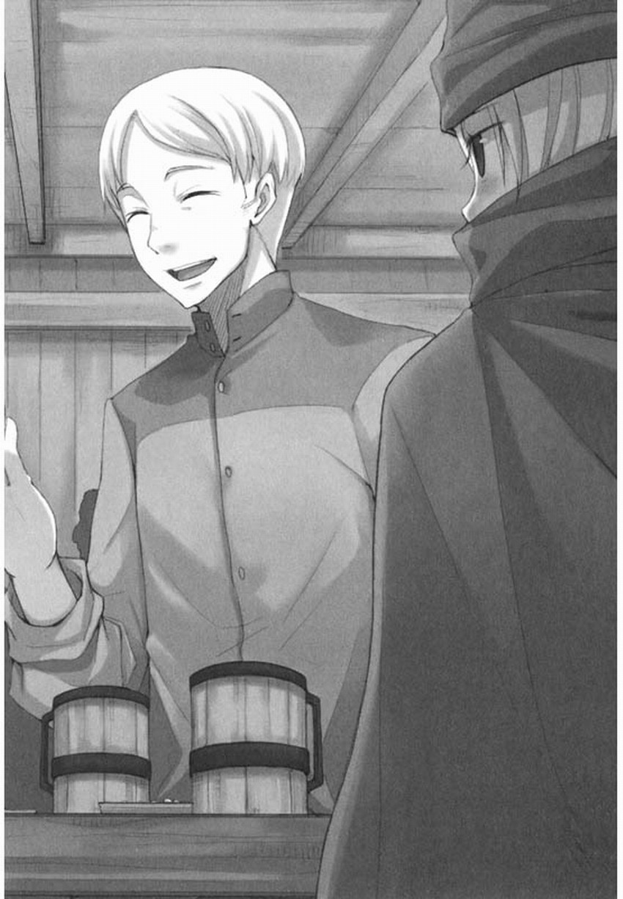

黑狼的搖籃
卸完乾草捆之後，總算能夠停下喘口氣。
雖然有些地方還留有殘雪，不過因為春天的陽光和尚未習慣的體力勞動，芙露爾也還是出了一身汗。
“這草不錯呢。今年的家畜會長得很好吧。”
瓊斯商會的男人數着乾草捆，不經意地這樣說道。
芙露爾拍掉沾在衣服上的乾草，努力露出一個僵硬的笑容，對那個年齡可以當自己父親的男人說道。
“只要好好養育的話，到了冬天應該能長得很肥壯吧。”
“這樣啊。那是不是該比平常多買一些……怎麼辦啊?”
“那麼多少錢?”
商會的男人用羽毛筆撓撓自己的下巴，似乎這才想起貨款的事情。他又數了一次乾草捆，隔了許久才回答道。“十七里克特。”“按照約定，最少應該是二十里克特吧。”就算她馬上反駁，對方也只是不停地轉着羽毛筆。那是商人們把對方當成傻瓜時的獨特舉動。正當芙露爾臉上僅存的笑容消失時，從她身後傳來另一個人的聲音。
“這種時候要說‘應該是二十五里克特’才對。”
“奧拉。”
芙露爾回頭一看，發現那裡站着一名年邁的商人。
玩弄羽毛筆的男人抓抓自己的太陽穴，微微嗤笑着歪着腦袋說道。
“看在那厚臉皮的份上，就按二十里克特算吧。”
“租借馬車的費用當然也計算在內了吧?”
即使漂亮的銀色頭髮變得相當稀少的現在，奧拉每天也會用鷄蛋清來擦拭他的頭髮。
儘管對方也不是年輕的商人，但在他看來也只是個毛頭小子。
“沒錯，情報費也包含在內。”
“願眾神保佑您。”
對於隔着自己腦袋進行的商談，芙露爾一句也沒有插嘴。
直到奧拉從馬車上卸下行李時，她才總算找到自己所能做的事情。
“回去了。”
奧拉在歸還馬車、確認過商會男人記在帳簿}_．的數字之後，只丟下這句話就邁開腳步離開了。
奧拉看起來身板很結實，背着行李也能健步如飛。
港口的裝卸場人來人往、車水馬龍，可奧拉卻如同施了魔法般毫無阻隔地前進着。
芙露爾還沒習慣為了隱瞞自己的年輕女性身份而遮在臉上的頭巾，因此就連直線前進都顯得很困難。直到進入兩人並排走就會堵塞交通的小路上，她才總算追上奧拉。
這裡從上方傳來小孩子的哭泣聲，腳下響起老鼠的叫聲，從齊頭高的窗戶能聽到貓叫聲。要是在稍早之前，這大概是自己一輩子做夢都不會踏足的地方。
即使如此，芙露爾還是覺得人凡事都得習慣。
她在路過時，順便輕輕撫摸睡在窗檐花盆旁的貓咪喉嚨。
庶民的生活也並不是那麼糟糕。
“大小姐。”
因為奧拉生氣的聲音，貓“噌”地跑回了家。
她朝發出聲音的不解風情者投以責難的目光，但對方的眼中卻充滿更強烈的責難。
“你沒有在反省嗎?”
芙露爾面對年齡和經驗都占壓倒性優勢之人的責難，反而會露出笑容，當然這並非因為她神經粗膽子大。
她只是單純回想起年幼時總是惹家庭教師生氣的情景。
“啊啊，抱歉。不，我有在反省。”
實際上，自己在交涉時完全沒起什麼作用。
“另外，我本來還希望你能表揚我在想違反約定的對象面前沒有發怒呢。不過看來時機不大對啊。”
“大小姐。”
奧拉聽了她的玩笑，皺起的皺紋几乎延伸到光禿禿的頭頂上。
在交涉時明明像石像一樣面無表情，除此之外表情卻異常豐富。這真是讓人很佩服。
“別生氣。還有，我說了不要叫我大小姐的吧。”
“那麼，請你稍微有一點商人的自覺。”
在奧拉筆直的視線面前，芙露爾不由得移開了目光。
她把“要有作為商人的自覺”這句話時刻銘記於心。
因為自己已經不再是貴族了。
第十一代布朗家當主、芙露爾·馮·伊塔爾忒爾·瑪麗埃爾·布朗。
她甚至對那長長的名字感到有些懷念。
“當然有自覺了。我可是雙手沾滿魚腥味地運送鯡魚，返程時還在馬車上裝滿了乾草呢。”
“那還真是了不起呢。大概誰都不會相信你之前連騎馬都怕得要命吧。”
從話中完全聽不出誇獎之意，因為奧拉還在生氣。
芙露爾當然清楚個中理由。
可是，嚴厲的奧拉似乎覺得必須說清楚才行。
“買人鯡魚花了十二里克特。關稅四里克特。作為糧食的小麥麵包、羊肉乾、醃豬肉、醃制乳酪和葡萄酒一共半裡克特。馬匹的飼料費和馬車的租借費是兩里克特。你覺得收支平衡了嗎?”
聽到奧拉的質問，芙露爾在頭巾裡嘆了口氣。
算上買入鯡魚的全部費用，一共是十八個半裡克特。如果接受那個商會男人厚顏無恥提出的十七里克特報酬，結果就會赤字。
雖然貴族習慣于在贈與和受領之中生活，但交易並不是單純的贈與和受領。
要給予對方某物，就必須收取其價值以上的報酬。
不那樣做的話，自己就要挨餓。
“可是，我也沒打算就那樣接受啊。”
“是那樣嗎?”
奧拉直衝沖地向前走着，對自己看都不看一眼。芙露爾對那態度不由得也怒上心頭。
“你想說我是個連反駁都不敢的膽小鬼嗎?”
奧拉聽了那話，馬上扭回頭說道。
“不。不過就算大小姐頑固地主張契約是二十里克特，也沒有能夠證明的證據。”
“我確實聽到那個人這麼說了，你難道在懷疑我嗎?”
‘‘不是那樣。但是，這世上再沒有比無休止的爭論更難看的事了。在這種情況下，通常都會考慮在兩者的要求之間做出妥協。”
“所以你才說是二十五里克特嗎?”
奧拉點點頭。
如此近似疲憊的點頭，一定是已經懶得再討論了吧。因為這是商人們不言自明的常識。
沒錯。奧拉從一出生就是個純粹的商人，他曾經負責過大商會帳簿管理。
他會稱呼芙露爾為大小姐，是因為布朗家前代當主當家時的御用商人是奧拉的前主人，因此得以頻繁地出入布朗家。
只不過到了芙露爾差不多該談婚論嫁的時候，前代當主病故，原本就漸漸沒落的家族終於即將傾覆，漸漸和奧拉所屬的商會斷絶了關係。
兩人的再次相見，是在奧拉的原主人為了成為芙露爾的丈夫而前來締結契約的那天。
明明沒過多長時間，但現在看來卻已經是在褪色的記憶深處之事了。
“那麼大小姐，你在那邊是以多少錢收購的乾草?”
思考只有一瞬的工夫。
現實總在不斷變動，一直處于自己的眼前。
沒落的家被富裕的商人買下，後來那個商人也因為破產而沒落得一錢不值。
用多少裡克特收購了乾草?
被人這樣質問，奇妙又不可思議，簡直好笑。
“兩里克特。”
不過，芙露爾也是在社交界經過掩飾真實表情訓練的貴族之後。
聽她理所當然般地這麼說完後，奧拉變得面無表情，誇張地抬起雙手，加快了腳步。
看來他好像真的生氣了。
商會的男人所支付的，是將鯡魚送到內陸村子和回來時所運送乾草的所有貨款。
這樣一來，鯡魚的花費共計十八個半裡克特，再加上乾草的兩里克特，就算支付二十里克特依然是赤字。
那種事自己當然清楚。
即使如此，芙露爾還是爭辯道。
她追上氣得健步如飛的奧拉，走在他身邊說道。
“村裡的人似乎過得很辛苦。他們說連割草的鐮刀都豁了口，必須拿去修理。哀嘆如果沒有兩里克特，就沒法活下去了。”
“是那樣的嗎?”
冷淡的回答。
和平民奧拉不同，自己即使沒落也仍是貴族。
芙露爾怒上心頭，不禁脫口而出。
“你以為我在說謊嗎?”
奧拉雖然一時停下步伐，卻沒有理會芙露爾再次邁開腳步。速度比停下前還要快。是誰不對顯而易見。芙露爾早已不是僱傭奧拉的貴族，只不過是為了生存向奧拉學習行商方法的一個普通人罷了。
莢露爾在狹窄的小巷裡奔跑，再次與奧拉並行。
“……抱歉，奧拉。可是你叫我大小姐，讓我覺得很生氣。”
奧拉聽到這話，完全停下了腳步。
芙露爾收不住腳，往前多走了幾步。
她回過頭，發現奧拉臉上露出苦笑。
“好的商人，要從好的藉口開始呢。”
芙露爾聳聳肩，稍微接過一點奧拉背着的行李。
穿過小巷後，終於在排列着相似房屋的區域中看到了他們的家。
“結果，大小姐辛苦一場還賠了錢嗎?”
女傭貝爾特拉是個誠實的孩子。
所以會想到什麼說什麼。
“沒有賠錢。”
“那到底是怎麼回事?”
貝爾特拉不但個子矮，還比自己小一歲。
說到身份差距更是天差地別。
可是在掌管家計者的魄力面前，芙露爾只能舉手投降。
沒有錢的話連明天的麵包都買不到。身為貴族時還能拿家名和榮耀做依靠，可現在那些卻連起碼的安慰都算不上。
芙露爾裝出收拾脫下的頭巾和外套的樣子，想要逃之天天。
“大小姐，我雖然是沒有學識的女人，不過奧拉大人說的話還是能理解的。”
“不要叫我大小姐。”
“不行!大小姐!”
芙露爾甩開貝爾特拉的阻止，逃進旁邊的房間。
雖然能從房門外聽到貝爾特拉的嘆息聲，不過芙露爾還是穿過房間來到走廊，經過浴室登上二樓。
從樓梯中間的木窗，能看到貝爾特拉用心打理的庭院。蔬菜和一般的香草、草藥都能在那裡自給自足。不單如此，甚至還能將多餘的東西拿到市場上去換肉。
而自己又給這個家帶回了什麼呢?
自己也很清楚。就算被掌管家計的貝爾特拉發脾氣也無話可說。
就連見習生的小鬼都會算加法。
可自己卻沒能把乾草殺價到二里克特以下。即使心裡清楚也做不到，從住在原本是自己家的領地、生活窮困的人手中奪取微薄的收入這種事。
“大小姐。”
有人敲了下房門，奧拉那再熟悉不過的聲音傳進屋內。
如果是在以前，儘管房門破舊，從自己的書桌走到門前也起碼需要二十步。
但現在要打開房門，只需要大步邁出三步即可。
“不要叫我大小姐。”
打開門一看，門口站着面無表情的奧拉。
“貝爾特拉在哭泣。她說大小姐不肯聽自己的話。”
“……"
毫不留情說的就是現在這種情況吧。
奧拉比當事人本身還要熟知別人的好惡。
雖然他說那是順利進行交易的秘訣，不過那技能在教育上似乎也很管用。想要讓人牢記造成赤字是多麼罪孽深重的事，再沒有比搬出貝爾特拉更有效的辦法了。
芙露爾投降般的點點頭，隨後又使勁點下頭，深呼吸了一口氣。
“知道了，知道了啦。”
“所以呢?”
“我會去向貝爾特拉道歉，然後好好聽她的話。”
“……’’
“還有，吃飯也一定全部吃完。”
奧拉露出笑容，留下一句“請稍事休息”後關上房門。芙露爾雖然“哎呀哎呀”地嘆着氣，但在做工粗糙的椅子上坐下時，臉上已滿是笑容。
房產全部被沒收，各種特權被賣掉，傭人們也都做鳥獸散去。自己最後落腳的地方是僱傭職人和身份低微的官員居住的住宅地，窮得不要說養馬，養得起豬就謝天謝地了。
雖然是典型的沒落貴族結局，不過芙露爾每天卻並未感到辛苦。
和商人打交道時，很多時候的確同作為貴族的常識相差甚遠。儘管有時也會感到生氣，但也並不是無法忍受。
再怎麼說，光是奧拉提出餘生都要負責自己的教育兼管賬，以及傭人中關係最親密的貝爾特拉表示將繼續照顧自己，芙露爾就能夠安心度日。
他們使自己明白，即使全世界都成為敵人，自己也不是只有“布朗”這個家名而已。
只要明白了這一點，人就能繼續在世上活下去。
只不過，自己也清楚為了維持生活需要金錢。
也就是說，這可不是能夠賠錢的時候。
“我已經是個商人了。”
芙露爾給自己鼓勁後，去向樓下的貝爾特拉道歉。
翌日的中午時分。
芙露爾喝完好不容易才習慣的麥粥，奧拉慢吞吞地對她說道。
“既然乾草的質量很好，那麼去做馬匹的交易可能比較好。”
“馬匹?”
“在海對面大陸的遙遠南方，最近爆發了戰爭。戰爭爆發的話，馬匹的價格將暴漲到難以置信的程度，簡直就好像長了翅膀的天馬一樣。”
雖然不是小看奧拉的情報收集能力，但芙露爾滿臉懷疑地反問道。
“如果是好買賣的話，應該已經有人在做了吧?”
“沒有搶先的必要[輕國錄入]。如果真是能夠賺錢的買賣，第二、第三也足夠了。”
奧拉一邊說著，一邊把長霉的黑麵包上壞掉的部分削掉，然後放進嘴裡。
雖然芙露爾在一開始吃發霉麵包時直皺眉頭，但經過多次商旅之後，她也不再在意這些小事。再說儘管芙露爾不知情，可聽說在大屋時廚房裡也是這樣做的。
芙露爾從貝爾特拉那聽說這事實時，除了驚訝，也奇妙地感到可以接受。
“馬匹嗎?”
馬匹在什麼地方都是高級品，不過維持也很花錢。
在房產和布朗家的名字還有些價值的時候，在微薄收入中佔據大部分的，是農民們收割馬和豬的飼料時支付的森林使用費。
乾草的質量優良、價格上漲的話，也許會有人無法負擔維持費而放棄馬匹。
“收取昨天的貨款之後，去和商會的人談談吧。”
芙露爾一邊用貝爾特拉仔細去掉霉點的黑麵包沾着大碗裡的粥，一邊說道。
“請不要再賠錢了。”
莢露爾聽到貝爾特拉的話後點點頭，微微露出苦笑。
隨後她的視線轉向一旁，這並不是因為貝爾特拉的話。
“哎呀，不知又從哪溜進來了。”
貝爾特拉跟着芙露爾的視線望去，從椅子上起身這樣說道。
在通往廚房和浴室的門口，手掌大小的小狗正靜靜地坐在那裡。
“弄破麥袋的就是這只狗嗎?”
城鎮裡的動物之多，是住在被森林和草原包圍着的大屋時所無法想象的。雖然那對貝爾特拉來說似乎是頭痛的來源，但對芙露爾卻正好相反。
“過來，這邊。”
一看到貝爾特拉靠近，小狗就準備起身逃跑。不過當它看到芙露爾手上的麵包碎塊後似乎鼓起勇氣，“咻”地站起穿過貝爾特拉的腳邊朝芙露爾跑去。
“大小姐。”
每天都在與侵入廚房的老鼠、貓和狗戰斗的貝爾特拉發出責難的聲音。
直到小狗吃完麵包，芙露爾才抬起頭說。
“因為我丈夫一直在掠奪別人，所以我不想變成那樣。”
小狗似乎也明白世間的道理，只要給予食物就會誓以暫時的忠誠。
它在芙露爾撫摸自己腦袋時一直原地不動，甚至還搖起了尾巴。
不過很遺憾，小狗不是騎士，自己也早已不再是貴族。
貝爾特拉走過來，抱起小狗從附近的窗戶放了出去。
“大小姐太溫柔了。”
“作為平民百姓的生活嗎?”
她自己也明白這是壞心眼的質問。
貝爾特拉不出所料地一時語塞，於是奧拉接過話頭說道。
“大小姐在當夫人時的事我們早就知道了。我的原主人雖然不是個值得稱讚的人，但是我們仍然必須依靠行商賺錢才行。還是說，大小姐另有其他賺錢的方法嗎?”
芙露爾並未不懂世事到連沒落貴族的末路都不清楚。
如果身為年輕女子，那可能性則更是相當有限。
“在能施捨前要先能賺錢。高台之家的人如果說出這種話，連貴族之名都要哭泣了。”
“取而代之的，是好領主的賬房先生總是在哭泣。”
“是啊。不過，我可不想看到貝爾特拉的哭臉。”
芙露爾把剩下的麵包碎塊放進嘴裡，站起身來。
“那我去行商了。這次決不會賠錢。”
貝爾特拉一直緊握著比在大屋時顏色略微變深的圍裙，靜觀着事態的發展。她這時總算鬆了口氣，露出笑容，這樣說道。
“路上小心。”
這裡是不是寬敞乾淨的大屋，都不會影響芙露爾的笑容。
河川如果被凍結，其流動肯定也會停止。北方一到冬天，不單是船隻，就連港口本身都會被凍結。因此一到春天，船隻的往來就彷彿一掃其陰鬱般的繁忙。
奧拉曾如此說明。這說法看來果然是可信的。
在晴空萬里的那一天，港口的裝卸場比平時更加繁忙。
“給，這是貨款。”
雖然二十里克特的金額差點被砍到十七里克特，不過在支付金額時卻沒有絲毫的猶豫。
商人這種生物也許都是些不可思議的人。
莢露爾一邊這樣想著，一邊向商會的男人談起午餐時奧拉說過的話。
“馬匹？”
“沒錯。聽說如果爆發戰爭，就會需要馬匹。”
“嗯嗯，話是那樣沒錯……馬匹啊。”
男人用羽毛筆撓着自己的下巴，輕輕抬起下巴閉上眼睛。
“要獲得馬匹的飼料，必須支付森林的使用費吧?乾草價格上漲的話，豢養也很花錢。”
“應該會有人出讓。是這麼回事吧?”
為了不被欺騙，必須在對方說話時完全把握對方的意圖，在其說完之前考慮好對策。
奧拉是這樣說的。看起來，商人們似乎能很輕鬆地完成這種妖怪般的技藝。
芙露爾點點頭，男人“唔”地嘀咕着環視四周後說道。
“你以為自己是第一個注意到這件事的人嗎?”
他會把自己當傻瓜般的這麼說，大概是看穿了用頭巾遮住面孑L的自己是年輕女人的緣故。
“不是。可就算是第二第三名，能夠賺錢的話還是能賺很多。”
奧拉是這樣說的。
芙露爾在心中如此補充之後，男人好像忍俊不禁般用手摸了摸嘴巴。如果自己露出“報了一箭之仇”的表情，就是自己輸了。
芙露爾在頭巾下裝出毫不知情的表情。
“失禮了。看來你每天都在成長呢。的確是那樣沒錯。如你所見，我們光是應付日常的業務就已經分身乏術，根本無暇去購進馬匹。所以你如果能進到貨的話，我們當然也有收購的可能。”
商人們一定會在話的最後部分含糊其辭。
“是買還是不買?”
男人聽到芙露爾再次發問，顯得有些不高興。
“如果牽來瘦骨伶仃的駑馬，你們也很為難吧。的確不好說呢。”
他不相信自己嗎?只有貴族才會這樣生氣。
芙露爾想想也的確如此，於是趕忙道了歉。
“再說就算我們不收購馬匹，想要的人應該也會有很多吧。摸清行情，找個好價錢買進的話是不會發愁賣不出去的。”
“原來如此。”
“只不過……”
“?”
男人合上帳簿，將其夾在腋下繼續說道。
“我認為會很困難。畢竟馬匹是活物，即使買來時是名馬，在持有期間變成駑馬的事也並不稀奇。”
“那倒也是……”
自己在大屋時，也聽說過馬匹的管理非常困難。
而且自己在租借馬車四處奔波的過程中，早已領教過了馬匹的喜怒無常。
如果費盡辛苦帶回的馬匹被人砍價砍到吐血，就算不是貝爾特拉搞不好也會哭泣的。
“所以這樣如何呢?”
“嗯?”
“如果有能購進馬匹的資金，不如試試其他的生意。”
“其他的生意?”
男人露出微笑，再次拿出夾在腋下的帳簿翻了起來。
“不會腐爛，不會生病，也不需要飼料和照顧。那種商品的話，就算沒有經驗也不會遇到重大失敗。馬匹即使能賣到高價，管理也是很費功夫的。”
男人所說的一點沒錯。
芙露爾本以為他只是個討人厭的傢伙，沒想到會被他親切地教導。
不知何時，自己完全被他的話所吸引。
“到底是什麼生意?”
“是服裝。”
“……服裝。”
男人聽到芙露爾的重複，便把手中帳簿剛好翻到的那頁拿給她看。
“這邊的數字是進貨的[輕之]金額[國度]，這邊是販賣的金額。利潤雖然沒有馬匹那麼高……不過從上到下的所有商品都有賺到錢吧?”
如果這不是為欺騙對方而事先準備好的，就的確如男人所說。
再說，在和自己說話時根本沒有動手腳的時間。
芙露爾做出這樣的判斷，老實地點頭稱是。
“的確是穩定的商品。”
男人聞言合上了帳簿。
取而代之扣‘開的，是美露爾的嘴巴。
“可是，要購進什麼樣的服裝才好呢?”
“那就要依賴您自身的判斷了。”
雖然這是非常理所當然的事，不過因為芙露爾把穿戴打扮全部交予別人負責，所以對服裝的事完全是門外漢。
就在芙露爾猶豫該不該先和奧拉商量時，男人突然拍着手這樣說道。
“對了對了。在與本商會有來往的客戶中，有個很有鑒賞眼光的人呢。”
“鑒賞眼光?”
“是的。他有時會代替本商會販賣購進的服裝，是個非常優秀的人，服裝也賣得很快。他提出下次想由自己負責進貨，正在尋找能夠提供資金的人。”
芙露爾早就覺得自己的頭腦不是那麼靈敏，直到現在對商人們的話依然抓不到要點。
因此，她在話中察覺到某種奇妙之處。
“就是說……讓我提供資金，利潤共享嗎?”
“是的。你除了獲得利潤，還能學到選購服裝的知識。對方也能通過從進貨起就全程負責，賺到更多的錢。”
“那個……”
這條件應該不壞吧。
自己會遇到這種事，果然世界上並不全都是壞人呢。
芙露爾這樣想著。男人又翻了一會帳簿，告訴她一個名字。
“那人的名字是米爾頓·帕斯特。”
聽起來像是貴族的名字。
身上一有錢，就忍不住想去買東西。
芙露爾買下貝爾特拉想吃的乳酪，還有冠以某村之名、奧拉讚不絕口的葡萄酒後踏上了回家之路。
雖然家計沒有可以亂花錢的餘地，但那兩個人應該並未窘迫到會對送給自己的禮物橫眉豎眼吧。
再說，自己也得到了新生意的線索。
“服裝的買賣嗎?”
雖然只買了手掌大木桶份量的酒，卻似乎激起了奧拉的酒癮。他閉上眼睛不停吸着酒香嘀咕道。
就算芙露爾談起從商會男人那聽來的事，也不知道他到底有沒有在聽。
“沒錯。就算出手試試……奧拉!”
芙露爾喊了他的名字後，他才總算將視線轉向這邊。
“不好意思。非常懷念這芳醇的香味……是服裝的買賣吧。要做那個嗎?”
“有個代替那家商會販賣購進服裝的男人，他下次似乎想從進貨到販賣全權負責的樣子。”
“原來如此……”
奧拉再次用高高的鷹鈎鼻子猛吸葡萄酒的香氣，隨後屏住了呼吸。
即使是裝模作樣的貴族也不會做到這個地步。
芙露爾忘記了生氣，對老帥哥的舉動露出笑容。
“名字是米爾頓·帕斯特。”
可是在自己說出那個名字的瞬間，奧拉滿是皺紋的眼皮猛地睜開，從中射出鋭利的視線。
“帕斯特家的人?”
“你知道嗎?”
“……呼。嗯嗯，當然了。”
奧拉最後深吸了一口酒香，把酒蓋好放在桌上。在白天與夜晚夾縫間的這個時間，因為貝爾特拉去市場採購，所以家中靜悄悄的。
“領主本人原本是位聞名于世的騎士，既勇猛又優雅。他的風流韻事不計其數，而且是個慈悲為懷、關心家人的人。據說，繼承了帕斯特之名的人大概不止三十個。”
兄弟姐妹眾多的家庭並不稀奇，有兩三名側室也是很正常的。
雖然有“在給同父異母的孩子們起名時，就算參照聖典都不夠”這樣的笑話，但是有那個數量的孩子的確也很罕見。
原來如此，似乎的確會變得有名。
“因為不可能分給所有的孩子領地，所以那個人應該是離開家的其中一人吧。你說他代為販賣商會購進的服裝嗎?”
“嗯……啊啊，哎?”
芙露爾之所以會在隨口回答後又重新反問，是因為她被在窗檐上的盆栽前嚼嘴巴的山羊吸引了目光，大概它是從哪逃走，或是被人買來後忘記拴好了吧。
芙露爾獃獃地看著這奇妙的光景，慌忙再次回答道。
“啊，啊啊。”
“……算了。他做的應該是針對貴族的生意吧。我們過去也做過這種生意，僱傭無處可去的貴族次男或三男。要說為什麼要這樣做，是因為就算推銷豪華的服裝，姓氏是‘鞋店的’或者‘鍛造屋的’的人都會吃閉門羹。再者，貴族間的流行非常容易改變，需要利用他們的名字和知識進行推銷。”
“原來如此……”
“那麼，你和那個叫帕斯特的人見過面了嗎?”
山羊最後判斷盆栽的葉子不能吃，叫了一聲後悠閒地走掉了。
“不，我覺得不能着急，先和奧拉商量下比較好。”
“這樣啊。大小姐也總算有些開竅了呢。”
“之前，已經因為自己的獨斷獨行吃過兩次苦頭了。”
奧拉笑着輕輕咳嗽一聲，手指向放在桌上、從芙露爾所收的二十里克特中扣除花掉金額後的剩下貨幣。
“?"
芙露爾不解地歪起腦袋，結果聽到一聲微微的嘆息聲。
“不過要學習的東西還很多，前途依然多難啊。大小姐接受的這些貨幣。”
“貨幣?金額不對嗎?”
當芙露爾正要說出“這不可能”時，奧拉輕輕搖搖頭。
“邊緣磨損成這樣的貨幣就算拿去給兌換商，究竟能不能順利兌換呢?搞不好必須要有價值減少一成的心理準備。”
芙露爾慌忙朝桌子上的貨幣望去，發現的確有幾枚貨幣邊緣嚴重磨損、形狀扭曲。
“算了。即使一下全教給你也記不住。一樣樣來就好。不過……”
“…一不過?” ．
“如果像商會的小鬼那樣，鞭打棒毆也沒關係的話就另當別論了。”
奧拉難得開了個玩笑。
看來他非常喜歡當作禮物的葡萄酒。
“以前在晚會上被打過一次手，結果之後痛哭了一個星期。”
奧拉很高興地笑着，把貨幣集中起來放人木箱蓋上蓋子。
“那麼，此事就等其他機會吧。”
“那樣最好。”
“對了，大小姐對這件自己送上門的買賣服裝生意有什麼看法?’’
芙露爾因為突然的話題轉換有點不知所措。
她來不及思考，冒出的想法便已脫口而出。
“我覺得很好啊。”
“是這樣嗎?”
奧拉淡淡地回應道，拿起羽毛筆在桌子上攤開的老舊帳簿上寫下一個數字。
基于芙露爾帶回的貨幣枚數，在最右側遺憾地寫下了損失。
“很糟糕嗎?”
“不。如果大小姐認為應該如此，那這樣就可以了。正如商會的人所說，雖然馬匹會死亡、生病和受傷，但是服裝好好保存的話可以維持很多年。過去購進服裝時，最後經常要花上三年才能在帳簿上記錄收益。因為是很難遭受嚴重損失的商品，所以最合適拿來練習。”
“那麼……”
芙露爾說完，奧拉重重地點頭這樣說道。
“這是大小姐第三次全權處理工作呢。”
在大屋生活時，交給自己的事只有穿上拿出的衣服和吃飯而已。那是對家族的興盛和沒落、伴侶的選擇都毫無發言權的生活，獃在那裡，只是聽從周圍的吩咐。
她仍未適應從商的習慣，不要說看穿商人們的謊言，甚至不想和他們過多交談。
即使如此，依靠自己的手做些什麼一事仍具有非常的魅力。
芙露爾微微深呼吸_r一下，使勁點了點頭。
“只不過，要好好遵守我的建議。這樣可以嗎?”
誇獎、讓人高興後再做出告誡。
如果這時表現出不滿，就是不合格。
芙露爾活用學過的知識，這樣回答道。
“當然了。”
“願眾神保佑您。”
奧拉低聲說著合卜帳簿。彷彿看準了那個時機一般，貝爾特拉這時也從市場回來了，、
原貴族，貴族血統，現任貴族。
也許有種種原因吧，有着響噹當名字和姓氏的人意外地隨處可見。
其中很多人無法忘記過去，或是將其作為自己生存的支柱。
如果像芙露爾那樣沒落的家整個都被暴發戶商人買下，最後沒落得一錢不值，那麼名字也就只是單純的重擔。
所以她才會用頭巾遮住面孔，也很少自報家門。
因為是依靠奧拉過去的門路尋找工作，所以有時也會暴露身份。可是，大部分人都會同情地對此緘口不言。
不過這次經人介紹認識米爾頓是依靠芙露爾自己的力量，所以應該不會暴露自己是原貴族一事。
明明應該是那樣才對。
“我們在哪裡的晚會見過嗎?”
經介紹和芙露爾見面的米爾頓·帕斯特，握手後立刻這樣說道。
他是個把金髮梳得很整齊的年輕男性，身上的穿著也並不是那麼高級。
但是服裝上明顯下了很多工夫。如果不是為了握手而上前兩步的話，就算說他是大戶人家的公子也一定不會有人懷疑。
再回頭來看，芙露爾的手已經不能算是“只戴過柔軟手套的漂亮白皙的手”。雖然比起貝爾特拉仍是養優處尊的少女之手，但還不至于會暴露身份。
米爾頓看到芙露爾因為動搖而張口結舌，這樣補充道。
“果然沒錯。是在米蘭卿的晚會上。”
“啊。”
芙露爾之所以會發出這樣的聲音，是因為那個名字是她出席過的少數晚會的舉辦貴族之名。
“雖然曾打過一次招呼，不過你似乎沒記住我呢。”
如果妙齡少女參加晚會的話，握手的次數會比摸麵包的次數還要多。
即使只是接觸對方的手這種輕微的舉動，因為會重複幾十次，所以回家後手也會紅腫起來。
“不過這也是理所當然的吧。因為你很受人矚目。”
當時前代當主還健在，家裡並未那麼瀕臨危機。
也就是說，是在自己仍是不錯的結婚對象之時的事。
“名字應該是……”
“芙露爾·布朗。”
已經很久沒有提起過那個名字了，這讓芙露爾感到既懷念又難為情。
只不過比起名字本身，那也許是因為說出名字的地點是港口附近酒館的緣故。
“沒錯，布朗家的大小姐。曾被以壞心眼而聞名的迪安家夫人打過手。”
“啊!”
這次芙露爾驚訝地大聲喊出了聲音，幸好這裡不是什麼高雅的用餐場所。
自己的聲音很快被淹沒在喧囂中，只剩下米爾頓的笑容。

“那之後，有很多見習騎士想要去追求你哦。你不知道嗎?”
米爾頓把炒豆放進嘴裡，也許是想掩飾嘴邊忍俊不禁的笑意吧。
可是那份體貼反而讓芙露爾更加不好意思，即使用頭巾遮着臉也覺得無地自容。
“可是那之後的事……真讓人同情。雖然也有人對此冷嘲熱諷就是了。”
芙露爾也很清楚，他指的並不是自己哭了整整一周的事。
她在頭巾裡冷靜下來，深呼吸後點點頭說。
“畢竟，我們沒法決定自己的前途命運。能夠說三道四的，只有那些坐上極少數幸運椅子的人。”
原來如此。米爾頓將葡萄酒倒進酒杯的動作比貴族更隨便些，不過又沒有終日舞弄長矛的騎士那麼粗俗。那是好像自己淘氣的外甥般的動作。“我是整個家。”芙露爾剛開口，端起酒杯的米爾頓便“哎?”地反問道。“我是整個家從椅子上滑落。即使如此，世上似乎仍有我的容身之地。只是沒想到，那居然會是行商。”
米爾頓點點頭，感覺有些耀眼地眯起眼睛，眺望着港口開口道。
“因為我是第二側室的三男，所以離家時連巴掌大的土地都沒得到，只有帕斯特的名字和微薄的金幣。既沒有能夠終日練武、以期望某日獲得名門大小姐芳心的馬匹和裝備，也沒有能夠靠吟詩生活的才能。不過我早就料到那些，所以並沒有太過慌張。”
“因此才開始行商嗎?”
有些人是被從棲身的家裡趕了出來。
米爾頓再次吃起炒豆，也許是為了隱藏苦笑。
“幸運的是，憑藉帕斯特的名字能敲開大多數家的大門。而且我喜歡酒、美食和閒談，經常在各處的餐桌上露面。在鎮上閒晃時，聽說有地方需要‘那樣的人’。的確，容身之處是哪裡都會有的。”
在以金錢成為自己丈夫的人死去、家道完全中落、被沒收房產時，家裡的傭人對並未驚慌失措的芙露爾感到佩服。
可是，那並不是因為芙露爾是特別堅強的女性。
因為她只是隨波逐流地活着，所以只是在聽天由命罷了。
她從眼前的米爾頓身上感覺到相似的堅強。
“聽說你買賣做的不錯。”
“哈哈。被人當面說起還真是不好意思呢，不過我也是有些自信的。”
有許多人把以家族的權威為後盾、狐假虎威獲得的功績說成是屬於自己的。
眼前的米爾頓雖然離家替商會販賣商品，心裡卻似乎很清楚那一點。
如果能像天使那樣一直留在天界也就算了，可一旦失去翅膀墮入凡間，就不能再超然脫俗下去。
老實說，芙露爾很羡慕腳踏實地的米爾頓。
所以她會說出這樣的話，也几乎完全是無意識的。
“那個秘訣呢?”
在商道里，會輕易說出秘訣的人根本不算商人。奧拉以前曾經這樣說過。
芙露爾話剛出口便感到後悔，那真是個愚蠢的問題。
實際上，米爾頓微微眯起眼睛，嘴邊的笑容也略顯做作。
但是當芙露爾想要彌補自己的失言時，米爾頓抬起視線這樣說道。
“正視自己。”
她一瞬沒能明白話中的意思，回望着那漂亮的藍色眼眸。
“秘訣就是正視自己。做同樣生意的人當然還有很多，不過大多數人在賣給熟識的人幾件衣服，就不再繼續推銷。那是因為他們隱約覺得，自己和購買者還處在同樣的位置。能夠賣掉一開始的幾件，是因為購買者明白那一點，出於同情才買下的。不過我不會那樣做，我會告訴對方，帕斯特之名只不過是讓顧客打開家門，抓住生意機會的契機而已。這樣一來，即使對方輕蔑、嘲笑我，我也會堅持稱讚對方、強調衣服的優點、繼續推銷下去。因為我帶去的衣服本來質量就好，所以總會賣掉。”
米爾頓突然停下怒濤般的活語，微笑着說。
“還被商會當作重寶。”
米爾頓說完後喝乾葡萄酒，又續了一杯。
芙露爾其間一言不發，並非被他的侃侃而談所壓倒。而是因為米爾頓那徹底的覺悟塞滿了她的胸口，讓她如鯁在喉。
“哈哈。有點刺耳吧。”
“不、不是……”
“可是。”
米爾頓把銅幣交給端來酒杯的店主，繼續說道。
“說到底，我也是有目標才能這麼做的。”
芙露爾聞言，在他身後一瞬窺見了城鎮女孩的身影。
不過，米爾頓所說的內容卻完全不同。
“我想給家裡、給家裡的人還以顏色。”
吃豆子的動作是在掩飾笑意。
芙露爾認真地注視着他的舉止。
“和不辱沒帕斯特的家名有點不同。怎麼說呢，應該是即使被趕出家門也能過得很好吧。我想這樣挺起胸膛，即使要為此下跪磕頭也無所謂。當然是作為一個商人啦。”
毫不動搖的決意。
自己突然按捺不住放在粗製木桌上的手。
如果這裡不是嘈雜的港口酒館，粗製的木桌是鋪着白布的高級品，自己的手也許會靜靜地和米爾頓的手重合在一起。
芙露爾會止住這個念頭，是因為這裡並_／ ～，
在自己眼前的，是為了自己的目的決足大步前進的人，而自L b已決心成為商人。
“那麼，你……”
“是的。”
喉嚨好像被哽住。芙露爾用力活動下巴說道。
“聽說你在尋找出資者?”
對商人來說，根據立場改變對應是理所當然的。
芙露爾把對方看作商人，所以像商人般那樣說道。
米爾頓看起來在微笑，一定不是自己的神經過敏。
“嗯嗯。”
她深深吸了一口氣問。
“需要多少?”
米爾頓所提出的，並不是現在的芙露爾付不出的金額。
滿是麵包的湯裡，放了豆子、蔥和昨晚剩下的肉。如果吃下兩大碗的話，兩天都不用吃飯了。明明已經如此豐盛，上面竟然還加有曬好的乳酪。
就算是端上大戶人家的餐桌也毫不遜色的料理，不愧是因為人手不足經常出入廚房的貝爾特拉。
而且由於布朗家的財政一直很窘迫，她還擅長活用便宜的材料。
就連身經百戰的商人奧拉得知那原材料費用時也忍不住咂舌，她手腕的高超可見一斑。
吃飯時，拿着飯勺的貝爾特拉無人能敵。
“麵包是鎮上檢查官認定不合格的便宜貨。雖然又硬又老不能直接吃，但是放到湯裡就正好。蔥是用院子裡多餘的香草和隔壁第三家的太太交換的。肉則來自迷路闖進院子裡的鷄。”
自己小時候曾被嚴厲叮囑不能去屋子背後。在得知那是因為裝設有捕獲晚餐材料的陷阱時，自己感到非常佩服。
雖然陷阱是年老的園丁所設，不過貝爾特拉似乎也有在依葫蘆畫瓢。芙露爾和奧拉也很清楚，那肯定不是單純迷路的鷄。
不過這裡是豬、羊、山羊和兔子等可食用動物遠遠多於森林草原的城鎮，即使借用一兩隻鷄應該也不會有人說什麼的。
奧拉像往常一樣稱讚着貝爾特拉的手藝。
與往常不同的是，芙露爾雖然吃着飯，卻沒有稱讚食物好吃。
“大小姐？”
芙露爾突然被人搭話，嚇得差點弄掉了湯匙。
因為銀製餐具早已被賣掉，所以這是錫製的便宜貨。
雖然貝爾特拉表示有時會忍不住想要擦拭銀製餐具，但是芙露爾卻喜歡能隨意使用的錫製品。“啊、啊啊，好吃。”奧拉和貝爾特拉聽到她慌張地這麼說，驚訝地注視着她。“非、非常的。”聽到她這樣補充後，兩人開始彼此對望。芙露爾把麵包撕碎，就那樣吃了下去。雖然麵包很硬，不過這樣就暫時不用說話。“和帕斯特家的兒子發生什麼事了嗎?”芙露爾能聽見自己心臟躍動的聲音。那聲音明明大得足以傳到對方耳朵裡，可芙露爾還是移開視線，在嚥下嘴裡的麵包前再次把麵包送進嘴裡。
“哎呀，又開始什麼新的生意了嗎?”
貝爾特拉雖然對家務難以置信的敏鋭，卻在奇怪的地方很遲鈍，、
還是說，她是在明知故問嗎?芙露爾無視她喝起了啤酒。
“行商的原則。”
奧拉彷彿看準了芙露爾從椅子上起身的時機，這樣說道。
“不要和對方太親密。”
這次，自己的胸口沒有發出聲音。
她以冷淡的目光朝奧拉望去。
只不過，奧拉並不會因此退縮。
“要順利地行商，需要與許多人交易。因為經常會出現難以預料的困難，所以要避免一旦某個人的貨物無法運達便出現破綻的情況。”
沉默的對視還在繼續。
可是，芙露爾根本敵不過面孔、眼睛和嘴巴都能不動聲色的奧拉。
芙露爾移開視線，拿起大碗對貝爾特拉表示“再來一碗”。
“太過執着于利益也很危險。人如果夢想賺大錢的話，就會甘願
為此冒任何風險。行商需要持之以恆，必須時刻迴避危險。”
奧拉雖然嘴上這樣說，但是話語中完全沒有力道。
他大概已經通過剛纔的話，確認了芙露爾的樣子為什麼奇怪。
“他是個誠實的人物。”
“商人能夠戴上任何面具。”
“他看起來是個誠實的人。”
奧拉點點頭，催促芙露爾繼續說下去。
“收益很[輕@之@國@度]穩定。我出錢，他挑選服裝販賣。大概有三到四成的收益，雙方五五分帳。”
“服裝呢?從哪裡進貨，通過什麼人?”
“聽說是海對面有名的城鎮。他說進貨會通過商會，不用擔心。”
芙露爾用湯匙把魚分成兩塊，把小的那塊送進嘴裡。
因為已經仔細地剔除了魚刺，所以吃起來很方便。
“販賣對象呢?”
“是之前的顧客，也不需要擔心。”
老練商人的質問暫時結束。
芙露爾彷彿窺探家庭教師臉色的少女一般，眼神上挑地偷瞥着奧拉。
奧拉用手按住額頭，摸着光滑的頭頂輕輕嘆了口氣。
那是他在思考問題時的習慣。
芙露爾回憶起與米爾頓的談話。從進貨到販賣的計劃，都給人以深思熟慮過的印象。
這不過是將之前順利完成的事原封不動地繼續下去。
有所不同的，只是準備購進服裝資金的不再是商會，而是芙露爾。
那也是因為單純聽從商會的指示販賣服裝，商會將獲得大部分的利潤。
如果與芙露爾合夥，在芙露爾獲得服裝的知識與顧客情報的同時，他也能獲得更多的利潤。
目的和計劃都說明得很清楚，應該沒有任何問題。
“是這樣的嗎?”
“有問題嗎?”
芙露爾不禁加重語氣反問道。
“要問有沒有問題的話……”
“有話就快說。”
她剛一說完，就覺察到自己的語氣太專橫了，因而移開了視線。
“抱歉。如果你覺得有問題的話，能不能告訴我呢。”
奧拉嘆了口氣，用手指撥掉沾在鬍鬚上的啤酒泡沫，開口說道。
“那個青年真的能夠信賴嗎?”
芙露爾沒有生氣，並非因為她變得心胸寬廣。
在奧拉這麼說之前，她自己也覺得有些在意。
據奧拉所說，能夠從細微的情報中發現意想不到的事實才是一流的商人。
“……有什麼可疑之處嗎?”
“雖然算不上可疑，不過有些奇妙的地方。”
“哪裡?”
芙露爾問道。奧拉俯首盯着手掌，然後只睜開一隻眼睛看著她。
那是他猶豫是否該把想法說出來時的表情。
他凝視着芙露爾，玻璃般的灰色眼睛深處在思考着什麼。
嘆息是在自己心中得出結論的標誌。
“大小姐，恕我直言。”
“什麼?”
“做生意這件事，就好像這個大碗一樣。”
他指着還剩下一半貝爾特拉特製濃湯的大碗。
“裡面是生意的利潤。如果是貝爾特拉那樣手腕的人，即使是相同的生意也能有好賺頭。但是就像裝得太多始終會漫出來一樣，任何生意的利潤都是有限度的。”
貝爾特拉坐在說話的奧拉對面，撕碎麵包吃了起來。
如果是家務以外的事，很難引起她的興趣。
“基本上，生意夥伴之間一定會涉及利潤的分配。”
“這我知道。米爾頓他說正是因為不想被商會拿走太多利潤，才在尋找像我這樣的人。”
奧拉點點頭，不過馬上這樣說道。
“這樣一來，帕斯特家的人平時從商的商會，收益就會大大減少．你不會太小看那件事了吧?無論哪家商會都是狡猾而陰險的。”
“哎?”
芙露爾反問道，很快又“啊啊”地露出笑容。
“不用擔心，正好相反。”
這次輪到奧拉反問了。
“相反?”
“沒錯。介紹米爾頓的瓊斯商會，是為了增加自己的利潤才這樣做的。現在米爾頓販賣的是從其他商會購進的服裝，介紹的瓊斯商會想獲得米爾頓的販賣技術。米爾頓對更換東家提出了一個條件．那就是尋找出資者。”
奧拉平靜如水的眼眸漸漸隱藏到眼瞼裡。
他過了一會睜開眼睛，從芙露爾身上移開視線。
“進貨通過瓊斯商會，是這樣吧。”
“是的。米爾頓從瓊斯商會購進服裝後，商會能夠提高服裝的販賣額，而且還能和米爾頓搞好關係。對商會來說毫無壞處。當然……”
芙露爾按住話頭，她似乎對能和奧拉這樣滔滔不絶講話的自己感到驕傲。
奧拉好像對戲劇般的停頓露出些微的笑意。
“不管對我還是米爾頓，也都是好事。”
她覺得很完美。
讓米爾頓拋棄之前隨意使喚自己、牟取暴利的商會，在分給他利潤的同時也確保了自己的利潤。這就是瓊斯商會的打算。自己參與其中代為出資承擔風險，同時獲得報酬。
而且在獲得收益之外，還能得到關於服裝的知識。米爾頓通過這樣不斷積累資金，最後一定會擁有自己的商店吧。
這應該是誰都不會吃虧的完美方案。
“唔……”
可是，奧拉卻意外地沒有回答。
他光滑的額頭上爬滿了皺紋，一直盯着湯匙一動不動。
芙露爾閉上眼睛老實地等着奧拉的回答，感覺時間變得很漫長。
她忍受不了沉默，小心翼翼地喝起手邊的湯來。湯雖然已經冷了。不過味道也相應地變得鮮明。她再次對貝爾特拉說出“好吃”後，一直默默用餐的貝爾特拉總算露出了微笑。
在芙露爾拜託貝爾特拉更換清口的湯後，奧拉突然唐突地開口道。
“好吧，如果大小姐那樣判斷的話。”
搞不清他到底在想什麼，奧拉把話又重複了一次。
芙露爾還沒有自我意識過剩到一聽到這話，就能夠馬上斷言“那就這麼辦吧”。
她放下湯匙，眼神微微上挑地問道。
“要是有什麼想說的，我希望你能說出來……”
“不，這既不是光說說就能解決的事，也可能是我太多慮了。因為到了我這個年紀，過去經歷過這樣那樣的事，就變得處處小心起來。再說吧。”
奧拉喝了一口湯，歪着腦袋對貝爾特拉投去“太棒了”的視線。作為還在用鷄蛋清擦拭日漸稀少頭髮的老帥哥，那舉動足以讓貝爾特拉露出笑容。
“大小姐在以自己的方式茁壯成長。手把手去教雖然害怕卻仍在前進的人，會讓好不容易成長的腳萎縮的。”
那話是不是在稱讚自己還有些疑問，不過他說出讓自己努力獨立前進的話，已經是很大的進步了。
也就是說，在不知不覺間，現在奧拉已經給予還是新手的她一些信任了。
“既然身為商人，能從失敗中學習才算是獨當一面。”
芙露爾笑着說道。
“失敗是前提啊。”
“我可沒有這麼說。”
奧拉說著也微笑起來。
隨後，貝爾特拉發現酒杯裡沒了啤酒，在起身去拿的同時說道。
“即使我不識字不懂複雜的事情，這裡也有我能做的事。”
貝爾特拉一臉認真的表情。
再沒有比被信賴的家人圍繞更能讓人放心的了。
第二天清晨，芙露爾早早地便睜開了眼睛。
不過這個早是相對於貴族來說的，與平民意義上的早還相差甚遠。這一點從身邊的例子上就可以看出，以前芙露爾被貝爾特拉喚醒的時候，貝爾特拉早已經穿戴整齊甚至都做過一圈家務了。
奧拉就更不用說了，不過今天大概也是他起來最早的一天。
芙露爾起床，用貝爾特拉趁做家務的空閒時間手工製作的木梳輕輕地梳理起自己的頭髮。而就在她將梳子划過肩頭的時候忽然意識到那裡已經沒有頭髮了。剪去貴族特有的長髮之後所度過的第一個早晨，清晨的整理工作竟然戲劇性的變得如此短暫，就好像輕輕吹過一聲口哨便結束了一樣。
貴族一樣的長髮，對於很多家公用一口很小井眼的平民們來說，是清洗起來非常麻煩的奢侈品。而且每天都充滿着大量繁雜事務的日常生活，根本就沒有多餘的時間去梳理長髮。
更何況在經商的時候讓別人發現自己的真實身份其實是女性也不是上策。
因為以上的諸多原因，芙露爾毫不猶豫的將頭髮剪短了。
不過令人奇怪的是，在她做出這個決定的時候感覺最驚訝的不是自己，反倒是她身邊的人。
當奧拉滿臉愁容地通知芙露爾不得不將頭髮剪短的時候，貝爾特拉在一旁拚命的反對。
就在他們兩個人爭執不下的空當，芙露爾散開頭髮，將好似外套一樣的圍巾包在身上，自己把頭髮剪掉了。
那個時候貝爾特拉的悲鳴至今還迴響在自己的耳邊，而奧拉那驚愕的表情恐怕更是前無古人後無來者了吧。
芙露爾對於銅鏡之中所映照出來的自己的髮型並沒有什麼不滿意。
相反地還對著鏡子中的自己微微一笑，這大概是剪短了頭髮之後的第一個笑容吧。
既然現在是處在這樣的立場，就不能夠再保持着之前那樣的貴族習慣。
從今往後要靠自己的雙手去生活，因為現在的自己是名為芙露爾·布朗的商人。
“好!”
因為早上的時候水井那邊要排隊打水，所以芙露爾用昨天晚上便已經準備好的水洗臉、漱口，然後將剩下的水澆灌在院子裡，整個動作一氣呵成。
很快走廊中傳來一陣有人從樓梯走過來的聲音，大概是聽到了潑水聲而從樓下趕來的貝爾特拉。
“大小姐?”
在輕聲的敲了敲房門之後，對面傳來貝爾特拉驚訝的聲音。
當然她的驚訝也是情有可原的。
要知道在平時就算搖晃着芙露爾的肩膀也很難在早晨把她叫醒。
芙露爾打開房門微微笑道。
“早上好。”
“您、您早上好……”
“奧拉呢?”
“哎?啊……他啊，和往常一樣去市場那邊散步了……”
起來得太早，連平日裡總是監督着自己的奧拉都不在身邊。
既然如此，芙露爾終於可以自己做決定了。
“那麼，給我準備早餐吧。麵包裡放一塊乳酪，然後再來一點葡萄酒。”
早飯是貴族與那些有錢人的特權，同時也是奢侈的一種表現。
要說不再身為貴族之後有什麼事情是比較痛苦的話，首當其衝就是再也無法吃到早飯。
貝爾特拉顯然有些驚訝，不過她低着頭稍微思索了一會兒，接着又慢慢的望瞭望四周，然後微微一笑點點頭道。
“我這就去給您準備。”
就算是對芙露爾今天起來這麼早的一種獎勵吧。
芙露爾抱了抱貝爾特拉算是回禮，她呵呵一笑轉身準備早餐去了。
窗外傳來公鷄的嗚叫，又一個清爽的早晨開始了。
當背着奧拉偷偷地享用過秘密早餐之後，芙露爾便穿好外套，並用頭巾遮住臉做好了出門前的準備。
“哎呀，這麼早就要出門嗎?”
貝爾特拉一邊用身前的圍裙擦着手，一邊驚訝的問道。
“我去港口那邊看看，奧拉要是問的話你就這樣對他說。”
“是、瞭解了……”
貝爾特拉有些含混地答道。
芙露爾扭過去，無言地望着對方，貝爾特拉急忙補充道。
“不管什麼時候，我對大小姐的這種裝扮都不太習慣。”
對於貝爾特拉的話，芙露爾並不在意。
她只是輕輕地整了整外套，然後故意模仿着男性的聲音說道：“我走了!”
“請慢走。”
貝爾特拉的謹小慎微讓芙露爾不由得想笑，不過這也正符合了貝爾特拉的性格吧。
從屋子裡走出來，外面清新的空氣使芙露爾的心情愉悅起來。
寒冷乾燥的冬季過後，天氣一天比一天暖和起來，空氣之中瀰漫著好似森林一般的清新香氣。而那些沐浴在眩目陽光下的建築與樹木，也許因為心理作用都變得濃郁茂密起來。
春天到來，百花盛開，緊接着就將迎來那滿眼翠綠的盛夏季節。
繞過帶著幾頭山羊一起前進的商人，芙露爾邁着輕快的腳步向前方走去。
她的目標是港口的卸貨場，為了去見一個人。
穿過數條街道之後，芙露爾終於抵達了作為貿易據點而每天都會停靠無數船隻的港口。
而所有在這裡卸下的貨物，都將被裝卸工人們儘可能的以最快的速度運往別處。
他們之中的很多人都是在天還沒亮，那些教會的聖職者們剛剛敲響早課鐘聲的時候，便已經開始在港口工作了。雖然這所城鎮對市場和商店的營業時間有着非常嚴格的規定，但港口卻是一個例外。因為對於那些飽經風雨來到港口而且嚴重受損到几乎快要沉沒的船隻，按照規則是無法拒絶它們人港的。不過這也只是那些進行貿易往來的商人們的說辭罷了。也許一半是事實，一半也是藉口吧。
而相對的，那些將貨物從港口運送到市場的騾馬即便疲憊的即將倒下也好，市場也不會因此而提前開放。
“好了!全都裝上了!願眾神保佑你!”
赤裸着上身的裝卸工的大嗓門伴隨着雙腳踏上馬車貨架的聲音同時響起。
但是他的聲音很快便淹沒在港口的一片喧囂中。
等到太陽升起的時候，不管是多麼老邁的商人也能夠將貨物運送出港口。
現在這個時候來到港口踏上旅程的旅者們的數量也是最多的。
各大商會的卸貨場上，滿載着貨物的馬車與車伕們一輛接着一輛，絡繹不絶。
而在這之中還充斥着來回奔走着負責船隻與商會聯絡工作的小伙計，因為有貨物遺忘在貨場而匆忙地查點數量的商人，忙碌地拾着從裝的滿滿的鹽漬鯡魚桶中散落出來的鹽粒的乞丐。
人聲鼎沸的港口。
在你忙碌地將貨物裝車的時候，恨不得能夠儘早離開這個喧閙的地方，可一旦你將馬車駕出港口向城鎮前進的路上卻又不禁想念這份喧囂。
想要習慣這種氣氛大概需要花上不小的力氣吧。
就算無法達到奧拉那樣的程度，至少也要能夠適應在這樣喧閙的環境中做到鎮定自若。
“這是最後一個了嗎!?哎?二十張!?沒問題!全裝上了!”
很快芙露爾就發現了那位一邊將貨物放到馬車上、一邊大聲向對方喊話的青年。
在這個滿是打着赤膊掄圓了胳膊拚命幹活的壯漢之中，青年的這身打扮十分顯眼，看起來就好像是站在戰場之中的詩人一樣，格格不入。
“那麼，我先走了!對，還在那個山丘匯合!願眾神保佑你!”
在這樣的環境之中，要是不這樣大聲喊的話一定傳不到對方的耳朵裡面吧。所以青年似乎用盡了全身的力氣，大聲喊道。
芙露爾似乎對這樣的場面感到非常有趣，於是向握著繮繩的青年走去。 ．
而對方卻是在再次清點完貨物，牽着馬即將出發的那一瞬間才注意到她的存在。
“啊。”
“早上好。”
就在芙露爾猶豫着該不該用比較正式的語氣打招呼的時候，一句很有禮貌的問候便已經脫口而出。
米爾頓看了一眼貨物，然後將目光轉移到芙露爾的身上，微笑着回答道。
“你好。”
“還好趕上了。”
“哈哈。不過我還真沒想到你今天會來。”
隨着米爾頓的笑聲，從她的嘴邊升起一陣白霧，隨後飄散在還很寒冷的清晨空氣之中。
接着他轉過身望向馬背，揮了揮手讓馬匹開始前進。
“邊走邊說可以嗎?”
“當然可以。”
芙露爾來到米爾頓的身邊並排前行着。
被稱為貴族的人，也分為好多種類。既有住在熱閙城鎮之中的；也有住在靜謐的森林裡的；有住在山頂的豪華城堡之中的，還有住在平原樸實的修道院裡面的。
米爾頓這次的商業之行，據說目的地是控制着周圍大面積森林河川的名門望族。
雖然芙露爾這幾天一直都沒能睡個安穩覺，但是在這位年輕貴族的臉上卻看不出絲毫的疲憊，依舊神采奕奕。
一直到他們穿過熙熙攘攘的人群為止，芙露爾連一個哈欠都沒打過。
而在遮住臉的頭巾之下，芙露爾一直在悄悄地進行着深呼吸。
自己也必須像一個真正的商人一樣冷靜下來，要給人一種穩重冷靜的感覺。
“對了，關於我們昨天所說的事……”
在他們沿著港口的大路，從滿是商會和商館的部分走到旅館和酒館街的時候，芙露爾忽然開口說道。
但是她卻沒有把話繼續說下去，並不是有誰打斷了她的話。
而是看到牽着馬的米爾頓微微一笑。
“……有、有什麼好笑的嗎?”
要是芙露爾的臉上沒有遮着頭巾的話，說不定還會閙出什麼樣的笑話呢。
或者米爾頓再稍微使個壞什麼的。
“哎呀，不好意思。”
米爾頓用手摀住自己的嘴巴，道歉道。
芙露爾想生氣也生不起來，因為米爾頓現在的臉上，充滿了非常愉快的笑意。
那種笑容能夠使別人的心情也跟着一起好轉起來的笑容。
在早晨如此清爽的空氣之中，芙露爾無論如何也無法在這樣的笑容面前發火。
“只是覺得有些不可思議。”
“不可思議，什麼意思?”
芙露爾驚訝的反問道，米爾頓又不好意思地笑了笑。
即便不注視着那副笑容，恐怕芙露爾也生不起氣來吧。
米爾頓是商業夥伴。
所以自己要從他那獲得建議。
“嗯，是這樣。如果是在一兩年前，或者再稍微近一點的時間，你站在我旁邊對我說‘關於昨天所說的事……”我想我的內心之中～定會猶如波濤洶湧一般的無法平靜。”
啪嗒、啪嗒，馬蹄踩在地面上的聲音均勻而規律的響在耳邊。
芙露爾閉上了眼睛，這聽似單調的聲音卻使每一位聽到的人感到心情平靜。
確實如米爾頓所說。
時間果真能夠輕易的改變一個人。
“當然，其實我現在心中也是一樣的不平靜。”
米爾頓笑着說道。
當知道米爾頓是在同自己開玩笑的時候，芙露爾隱藏在頭巾之下的笑容也終於掩飾不住了。
“不好意思，玩笑開到這裡吧。那麼你對於我提出的計劃有什麼看法?”
當二人靠近城鎮之時，許多旅者模樣的人往來穿梭于身旁。
道路兩旁林立着小工業的作坊，見習的學徒工們正在進行着工作的準備。而麵包店在這個時候則已經開始忙碌起來，烤麵包的香味飄散在周圍的空氣之中。
“我接受。”
芙露爾簡短的回答道。
就在兩個人的目光都被麵包屋吸引過去的時候，芙露爾抓住了這個空當說道。
芙露爾把目光從麵包屋轉移到旁邊的米爾頓身上。
而米爾頓也一臉驚訝的望着芙露爾問道。
“真的嗎?”
“我當然不會騙你。”
攻守轉換。
意識到自己終於也夠得上一個像樣的商人了，芙露爾躲在頭巾下，慢慢地深吸了一口氣。
不過，當她看到臉上的表情由驚訝變為欣喜的米爾頓之後，內心中又不免有些小小的愧疚。
現在的芙露爾終於明白“兩眼放光”這個詞的含義了。
“非常——感謝!”
中間夾雜着一個深呼吸的悠長感謝聲傳來。
“啊……啊啊。”
芙露爾躲在頭巾之中用含混不清的聲音回答着，小到自己都聽不太清。
就在這個時候，芙露爾忽然想到奧拉的話。
不要太過認真。
看來不管什麼時候，奧拉的忠告都是正確的。
“我昨天晚上考慮了一下，決定還是接受你的提議。”
“這樣啊……啊，真是非常感謝!”
“…………''
看著眼前少年那率真的微笑，芙露爾勉強掩飾住自己內心的不安。
芙露爾一邊向前繼續走着，一邊儘力讓自己冷靜下來。
“不過，對於服裝的採購和銷售，真的都沒有什麼不放心的地方了嗎?”
“嗯。我相信介紹給芙露爾的這個商會，確實是想要與我們合作。”
芙露爾忽然想到奧拉那嚴肅的表情，於是追問道。
“這樣就可以相信他們嗎?也有可能是為了給現在的商會製造麻煩才這樣做的吧?有這種可能性嗎?”
“嗯，當然，這種可能也不能說就完全沒有。不過，我是這麼考慮的。像服裝這樣輕便的商品，如果採用船運的話，不管多少都是能夠裝得下的。而且一次能夠裝的越多，運輸的費用也就越低。但是若你上了貨卻無法將商品銷售出去的話也是不行的。但反過來說如果能夠賣出去的話，那麼上貨越多所能夠壓的價格就越低，而賣的越多利潤空間就越大。瓊斯商會無論如何也要成為這所港口最大的商會。你有過被別人貶損的時候嗎?”
米爾頓苦笑道，看來為了說服那個商會他也沒少受到那些人的惡語相向。
可是對於米爾頓的話，芙露爾的理解卻發生了偏差。
她錯誤的以為商人為了能夠獲得利益，不管是什麼樣的事情都會去做。
米爾頓繼續說道。
“在這個世界上的每個人都會擁有的一樣東西，就是疑心。”
尚且涉世未深的大小姐芙露爾被這句話提起了興趣。
“而且每個人都是以自己的利益為優先思考。當然，我也是一樣的。”
“那樣的話……”
芙露爾話剛說到一半，忽然又緘口不言。
她想說，既然那樣的話，為什麼你還說你是值得信賴的呢?
不過要是自己真的說出這樣的話，無非只能夠顯示出自己的幼稚而已。就好像從隨便的回答之中找到反駁機會的小孩子一樣。
不過幸好在千鈞一髮的時候自製力發揮了作用，才不至于讓她難堪。
不過芙露爾還是不知道該不該隱瞞自己的心情。
因為當她說出好似孩子一般的話語的時，心中總會湧起一陣異樣的感受。
於是她躲在頭巾的縫隙中悄悄地注視着米爾頓的臉。
這位年輕的沒落貴族帶著一副溫和的表情，輕輕地說道。
“雖然聽起來有點可笑，但我只能這麼說。”
當走到城鎮的邊緣時，米爾頓停下來說道。
“請至少相信我說的話。”
芙露爾微微一笑眯起了眼睛，面前的一切都變得不是那麼清楚了。
在城鎮旁邊的檢查站中，聚集着從周邊鄉村運送農作物過來的農民和趕在太陽升起的時候上路的旅者們。每個人都要繳納一定的稅金以及接受相應的檢查。
牛、馬以及被裝在籠子裡面的鷄鴨的叫聲與人聲混雜在一起，恐怕再沒有什麼地方比這裡更混亂了。
可是對於芙露爾來【輕】說【之】，周【國】圍的【度】喧閙一點都沒有傳進她的耳朵之中。“……真是沒有說服力啊。”“沒辦法。因為你總是不記得我的樣子。”芙露爾躲在頭巾下面“撲哧”的笑了出來。看來即便被從家裡趕了出來，也不見得都是壞事。“按下去，拉出來，再按下去……”“蝴蝶?貓?還是兔子和狐狸?”這是墜人愛河的年輕貴族們以自嘲的口吻所寫的短詩。在這個城鎮之中能夠和她分享這首詩歌的，除了米爾頓以外一定再無他人了吧。
芙露爾和米爾頓兩個人靠在一起，開心的笑了起來，不過很快他們的笑聲就如平靜水面上划過的波紋一般，消失不見了。芙露爾靜靜地說道。“我相信你。”雖然簡短，但是卻比商人們所使用的任何一個冗長的契約都要有力。
米爾頓重重的點了點頭，將手中的繮繩放下。
“請多多關照。”
米爾頓握住她的手說道。芙露爾回答道：“彼此彼此。”
接着，米爾頓馬上再次抓緊了繮繩，調整了馬匹的路線之後回頭說道。
“如果可以的話，我真想留在這裡。”
米爾頓一臉認真的表情，或者說有點過于一本正經更合適一些。
“真是讓人意外的絶妙發言。”
“對方是不是對你有意，在分別的時候最能夠看出來。”
“你是指那種用曖昧的態度說‘不要整個晚上都想著我喲’這樣的話嗎?”
連自己都覺得驚訝的話從芙露爾的嘴裡很流暢地說了出來。
這種將深藏在心底、許久沒戴甚至都落滿了灰塵的貴族假面再次掛在面前的感覺，讓芙露爾的心情無比舒暢。
“很輕易的就將心裡話袒露出來，看來我距離成為一個真正的商人還差得遠呢。”
“是嗎?不過我還沒問你什麼時候能夠再次見面呢。”
因等待騎士的再次來訪而度日如年的貴族大小姐。
芙露爾的這種演技絶對不差。
“三天後的夜晚。”
“我等你。”
身體擅自移動起來，這一定是因為在自己的身上流淌着貴族之血的緣故吧。
芙露爾只能把微微仰起的腦袋下意識的低下去，然後把目光輕輕的轉到別處。
米爾頓故意裝做一副什麼都沒發生過的樣子，揮了揮手道“再見”，轉身離開。
啪嗒，啪嗒，馬蹄聲漸漸遠去。
三天後的夜晚。
芙露爾望着米爾頓遠去的背影在心中低聲的重複着。這時她忽然察覺到自己的手竟然一直按在胸口之上。
芙露爾急忙把手拿了下來，然後緊張地將被自己的手握出褶皺的衣服拉平。
米爾頓同檢查的士兵打了個招呼，很簡單的便通過了。
然後他回過頭看了一眼。
芙露爾故意做出毫不在意的樣子轉身離去。
然後，便再也看不到米爾頓的身影了。
三天後的夜晚。
芙露爾在這喧閙的城鎮之中，好似唸誦着什麼寶貝的名字一樣，在心裡反覆的默唸著。
明媚的春光灑落在大地。
城鎮之中的建築緊密地擁擠在一起，兩戶人家之間房屋的間距甚至連張紙都塞不進去。
以前灑滿自己所居住房間之中的陽光，現在卻變成了一種奢侈品。
就連這種空中毫不吝嗇地灑下的陽光都能夠成為奢侈品，下層人民的生活果然很艱苦。
芙露爾一邊獃獃的想著這個問題，一邊用胳膊支起腦袋，靠在窗邊注視着正在分食自己早晨吃剩的麵包屑的小鳥。

“大小姐。”
在這樣一個悠閒的時候，這可真是破壞興緻的插曲。
不過芙露爾卻依舊眺望着窗外，沒有一點憤怒的情緒。
因為她自己也知道，在這個時候真正生氣的是奧拉才對。
“大小姐!”
奧拉提高了音量，將小鳥嚇得飛走了。
終於芙露爾懶洋洋地抬起腦袋，慢悠悠地說道。
“好吵啊……”
“要是我吵你就能聽進去的話，我寧願更吵一點。”
“好啦好啦，我知道啦……只是因為今天的天氣實在是太好了……”
說完芙露爾打了個哈欠，在椅子上面伸了一個長長的懶腰。
桌子上面擺放著幾張紙，還有羽毛筆與墨水。
其中的一張紙上，用流暢的筆觸寫着一頁文字。
那是奧拉所記錄的商人們在簽定契約的時候所使用的語句。
除了採購，販賣，貸款，租藉以及其他一些常用商業術語的使用方法與解釋之外，甚至還有向神靈祈禱的方法。
那些有時候不得不同異國的商人進行交易的商人們，據說還有他們專用的語言體系。交易金額小的時候還好說，當大額交易的時候要是看錯了契約上的一個字，都有可能會導致破產的結局。
面對那些時刻準備騙上一筆的虎視眈眈的傢伙們，莢露爾至少也要學會最低限度的應戰方法。
芙露爾一邊覺得奧拉所說的話有誇張的成分在裡面，一邊翻過下一頁。
這張紙上面整齊的記載着所有貨幣的名稱，在每個貨幣名稱的旁邊記載着其他貨幣同它交換的匯率。以及看起來好像咒語一樣複雜的交換關係。不過要想成為一個優秀的商人，就必須把這些繁雜的東西全都掌握。
那種事情即便不說，芙露爾也心知肚明。
“大小姐。”
這種毫無起伏的聲音，只有在奧拉真正生氣的時候才會有。
芙露爾將腦袋轉向奧拉那邊，然後皺起眉頭說道。
“別生氣嘛。你那個樣子讓我的心情也變差了……”
看來擁有敏鋭洞察力的奧拉早已經知道芙露爾的恍惚並不是因為什麼天氣太好的緣故。
奧拉皺着眉頭，閉起一隻眼睛，似乎在思索着接下來要說的話。
奧拉是一個非常賢明忠貞但卻頑固的人。
所以即便是面對芙露爾這樣毫無幹勁的傢伙，他都始終堅持着認真的態度。
“大小姐，我身為你的管家兼教師，有句話不得不對您說。”
“嗯?”
得到芙露爾簡短的回覆之後，奧拉微微的深吸了口氣，然後說道。
“請不要看錯事情的真相。”
又是這種令人厭惡的含蓄說法。
雖然這種讓人抓不住把柄、模棱兩可的說話方式是商人的天性，可是這樣的話卻可以有各種各樣的解釋。
聽到這樣的話，她臉上的笑容會立刻被一層陰霾取代，當然這也是可以預見的。
奧拉摸了摸腦袋，繼續說道。
“雖然這些話我並不應該講，但是帕斯特家的當主是引誘了前當主的遺孀從而繼承了家業。而且還有傳言說他們家關於領地問題以及決定政策等等都是由家族之中的女性所決定的。也就是說……”
“也就是說，繼承了他們家族血脈的米爾頓，也絶對是個吃軟飯的是吧?”
芙露爾的眼睛直直的盯住桌子前面的牆壁，接過奧拉的話繼續說道。
窗戶的外面傳來一陣嘰嘰喳喳的鳥叫聲，大概是剛纔被嚇跑的鳥兒又回來了。
那歡快的聲音，就好似走在遊園路上的小孩子一樣。
而身旁那陣低沉的嘆息則是賢明的管家大人所發出來的。
“不管怎麼說，他也是以高貴的貴族階級為商業對象的米爾頓，可是我卻不過是一個小、r頭而已。”“……我並不是那個意思……”“你不用說了，我自己明白。我都明白。我就像那些鳥兒一樣，永遠都無法落地，即便從窗口躍出去，也不過是就那樣在空中繼續飛翔罷了。”
芙露爾眯起眼睛，望着窗外沐浴在一片眩目陽光之下的院子說道。
奧拉努了努嘴似乎要說些什麼，但最後還是沉默了。
奧拉原來的主人就是芙露爾的前夫。
而且他也是芙露爾整個婚姻的見證者。
對於奧拉來說，他甚至比芙露爾本人對於那場婚姻更加感到痛心。
在布朗家衰落的時候，他向無助地失去了方向的芙露爾伸出援手，也是有贖罪的意思在裡面吧。
這個可悲的沒落貴族的女兒，經歷了一場甚至不能稱之為愛情的婚姻，但要她就這樣拋棄那段過往的話，也太淒慘了。
也許一切就是這樣。
雖然這些都只是奧拉的推測，但他的推測並沒有錯。
而且，恐怕這就是事情的真相。
芙露爾的視線轉回室內，帶著些自嘲的意味笑道。
“不過，在商言商。在利益面前人總是善變的，對吧?”
這是奧拉所教給她的眾多知識中的其中之一。
久經商戰的老人嚴肅地沉默着，最後還是認真地點了點頭。
“口說無憑，立合同為據。”
“您是說像商人那樣嗎?”
為了讓奧拉放心，芙露爾儘量使自己的笑容看起來顯得自然。
雖然嚴厲但十分溫柔的老商人，終於露出了安心的表情。這樣一來，他所該做的事情就全都做完了。芙露爾輕聲地咳嗽了一下，伸了個懶腰。桌子上還堆積着大量記載着需要記憶的知識的筆記。“加油。我會加油的!所以請相信我吧，可以讓我一個人靜靜的學習嗎?”
奧拉稍微考慮了一會兒，最後還是決定只留芙露爾一個人在房間內。
芙露爾望着房門被奧拉靜靜地關上，微微地露出笑容。
身邊的人都是如此善良。
所以自己一定不能辜負他們的期望，一定要用自己的力量來保護他們。
芙露爾輕輕的撓了撓自己的鼻子，不由得對自己的野心聳了聳肩膀。
然後用手拿起羽毛筆，這次她終於開始認真的學習了。
男人在分別的時候說三天後還會再來的話如果你相信，那一定是只會發生在吟遊詩人所講述的故事之中的事情。
同時她也知道，商業活動並不會像預想那樣順利。
到了第四天的傍晚，芙露爾收到了米爾頓發來的關於商談延長而不得不推遲歸期的信箋，不過她並沒有覺得灰心。因為相比較起來，還是奧拉那邊更叫人放心不下。
而且，芙露爾在米爾頓離開的這段時間裡，也並不是優雅的坐在屋子裡整天像嚮日葵一樣無所事事的曬太陽，而是每天都在緊張地忙碌着。
芙露爾還和米爾頓介紹的瓊斯商會商談關於乾草的採購事宜，整週都頻繁地來往于港口附近的商會之間。
並且每天的清晨和夜晚，芙露爾都要接受奧拉的關於服裝產業知識的授課，從羊毛紡成絲線、再製成毛織物的過程一直到麻布織物的製作方法，所有的一切都在授課範圍之內。
可是，不管是作為原料的羊毛，還是染料，都是產自自己從沒去過的異國他鄉，或者是從沒聽說過的地方的東西，如此不直觀的書面印象即便當時記住了，過不了兩天也會全都忘光。
更甚者，拿羊毛來舉個例子，原種羊的產地同這只羊所被養育的場地都是不同的，更別說剪下它的羊毛然後再送去染色了，接下來還要送去不知道哪個城鎮的作坊讓一些不知道是什麼組合的工匠們進行紡織，縮絨。等到記住這些，根本就沒有心思去記住諸如哪個城市出產哪種商品，然後應該賣到什麼地方去才有好的銷路這些更加複雜的東西了。
所以即便奧拉擁有豐富的知識，但是僅僅聽他的述說，芙露爾就想把這些知識記在自己的心裡是完全不夠的。
於是當她頻繁的往來與商會之間的時候，就不免向逐漸變的熟絡起來的同伴述說了自己的這些想法。不過連芙露爾自己都感到意外的是，這個新同伴不是別人，正是曾經差點減少了應支付金額給芙露爾的那個不可靠的男人。
這個自稱為漢斯的男人一邊笑着一邊表示非常同意芙露爾的看法。
“我也是一樣啊。”
芙露爾聽到之後越發的感到意外，於是反問道。
“真的?”
“當然了。需要記的東西實在是太多了，我覺得要是把這些需要記的東西都記進腦子裡去的話，那麼你就該連自己的名字都沒地方記了。”
身上散髮着一股鯡魚味道，渾身沾滿了汗漬泥垢和乾草，而且還剋扣過工錢的漢斯如實說道。
現在的芙露爾簡直無法用任何的語言去形容自己的驚訝之情。
“不過，像你這樣的貴族大小姐能夠有那麼優秀的老師還有什麼可抱怨的嗎。你可知道對於我們這樣的學徒工來說，皮鞭就是老師。麵包店就直接用和麵時候的擀麵杖。”
“奧拉……啊，原來他真的是那麼好的老師啊，他也說過和你同樣的話。不過我當時還以為是他故意編造出來的呢。”
看到芙露爾笑着似乎不太相信的樣子，漢斯輓起袖子露出胳膊給她看，說道。
“這是被鞭子抽打留下的傷痕，我學縫補的時候留下的。當時在石盤上面用貝殼寫字，我整個胳膊上都蹭滿了白色的粉末，而那一下把我胳膊上的粉末全都震掉了。還有這個。”
說著，漢斯指着左腕上一個和其他地方很不一樣的地方，說道。
“這是晚上為了保持精神而用蠟燭的火炙烤所留下的傷痕。”
對於這樣痛苦的回憶，漢斯卻毫不在意，很平靜地述說著。
只不過在他那故做平靜的臉上充滿了同情與憐憫。生來就不知窮苦為何物的貴族，竟也落得如今這樣一個不得不去面對生活磨難的下場。
由此芙露爾也不難理解一開始漢斯對她的態度和行為的理由。
在這樣一個飽嘗人間困苦的人面前，自己還顯出那樣不合時宜高高在上的態度，也難免會被人家取笑和捉弄。
“跟我一起學徒的也有天生就很聰明的孩子，所以我當時就想一定不要輸給他。到現在我也終於有了誇耀的資本了。只要努力的話我就一定能夠勝出!而相反的……”
一直滔滔不絶、誇誇其談的漢斯忽然停了下來，然後自嘲着說道：“我是不是太噦嗦了。”
不用問也知道他接下來要說什麼。
只要努力便一定能夠獲得勝利，天生聰明的孩子要是不努力也一樣落得一個失敗的下場。
正是因為擁有這種自信，商人們才敢不將貴族放在眼裡，甚至就連國王他們也敢於捉弄吧。
在芙露爾還是貴族那時起，她在看到這些商人們的時候就思考過這樣的問題。
這些人沒有什麼懼怕的東西。換一個角度來說，也許他們也沒有什麼值得去守護的東西。
“我們不善於跟修道士那樣的傢伙打交道。”
對於芙露爾的疑問，漢斯稍微思考了一會兒，用一種也不是十分確定的表情說道。
這個男人看來也不像是他給人的第一印象那麼壞。
“我們與他們完全不同，像我們這樣的商人永遠都是為了滿足自己的慾望。”
“我認為對於修道士來說，同樣永遠無法捨棄那種要獲得自我的救贖，然後再去普渡眾生的慾望。”
芙露爾不由得將奧拉常對她講的話脫口而出，沒想到此言競令漢斯瞠目結舌。
只不過現在的這句話之中，也包含了芙露爾自己的個人感情在裡面。
漢斯饒有興緻的摸着下巴，望着芙露爾。
這種在芙露爾之前看來完全是一種冷血而且粗魯的表現。
現在卻變成了商人所特有的一種可愛之處。
“你說的也許有道理。或者說，就跟你說的一樣。雖然這樣講有些不敬……不過我們商人同修道士也許真的是一類人。我們的目標就是將衰弱貧窮的國家……轉變為富強昌盛的國家，是不是這個意思?”
漢斯帶著非常興奮的樣子說完，又小聲的自言自語道：“簡直就好似樂園一樣。”
對於商人來說，利益是他們永久追求的目標。
為了利益他們可以不擇手段，從不相信任何人，甚至可以欺騙一直都對自己充滿信任的人。這一切都是為了獲得利益。對於他們來說，貴族和國王這些稱號毫無意義。要想成為一個成功的商人，必須經受皮鞭的抽打和血與火的考驗，而那些貴族和國王什麼的只不過是因為生得命好罷了。
“我可以問你一個問題嗎?”
芙露爾把臉轉到漢斯的面前正對著他，相處了這麼久，已經沒有再掩飾自己身份的必要。
芙露爾將頭巾摘了下來，問道。
雖然不知道芙露爾接下來要問什麼問題，漢斯帶著一副令芙露爾完全沒有想到的溫柔表情，很大方的答道：“問吧。”
“你這麼拚命的原因是什麼呢?”
芙露爾本人也曾經猜測過。
當然有很多現實中的理由，很多都是她身為貴族的時候完全無法想象的。
不過，芙露爾還是希望能夠通過漢斯的回答，找到另一個答案。
也許真正的商人會有令自己驚訝的回答。
“哈哈，要問這個事嗎?”
“很奇怪吧?”
芙露爾帶著微微的歉意笑道，這是在貴族的晚會上習慣了的反應。
“不……我理解你的想法。其實我也會想向商會的主人問同樣的問題。不過，我現在是一個人吃飽全家不餓的單身漢。所以被人問到努力的原因什麼的，還真有點不好回答啊。”
看來，是連他自己都還沒有找到答案吧。
芙露爾在同商會打交道的時候，除非遇到一個能夠比他更加厚顏無恥壓價的傢伙，否則她恐怕一輩子都不會忘記漢斯這個名字和他的樣子了吧。異常貪婪，卻又十分謙虛。商人還真是一種非常奇怪的生物呢。“我生在一個連吃飯都成問題的貧農家庭，我是老四。能夠沒被殺掉而活下來，對我來說就是最大的幸運了。我離開家鄉，不知道該去哪裡，也沒有地方可以去，只能夠緊緊地抓住這個肯收留我的商會。當然，也有很多和我一樣的人沒能堅持下來……”
漢斯說著說著有些不好意思起來，似乎為了掩飾自己的不安而擦了擦鼻子，舉動之間隱約透露出一股少年般的可愛。
那以前充滿着捉弄與輕蔑的目光，也由於內心之中的鄉愁而帶上了幾分溫柔而憂鬱的神色。
“所以說，要問我為什麼能夠堅持到現在……當然原因有很多，不過哪一個才是真正的理由連我自己都不知道。而且對我來說只有這一條路可以走，大概也有這個原因吧。只是……如此……”
漢斯似乎對眼前的這個問題感到有些為難，但同時又有些欣喜般地如此說道。然後他眺望着遠方沉默了下來。
芙露爾將自己的目光從漢斯的側臉轉移到自己的雙手上。
在她低下去的臉上帶著微微的笑容。
因為，她曾經看到過與漢斯的側臉相似的面容。
正是他那默默無言的面容，證實了芙露爾心中一直以來的一個想法。
對芙露爾來說，雖然她對曾經的那個爆發戶丈夫並沒有什麼感情，但是她卻稍微的有那麼一點點羡慕。
那就是似乎有什麼東西在他面前，能夠使他寧願放棄榮耀與信仰、犧牲友情與親情甚至愛情都要去追尋這一事實。而這個能夠驅使着如此優秀的人們去追尋的東西又究竟是什麼呢?
芙露爾也想親眼看一看他們的視線所一直追尋着的東西，哪怕只有一次也好。能夠使他們如此堅定的一直望向那個目標，這使芙露爾不由得對他們產生了羡慕。
所以，最近芙露爾開始不像以前那樣對自己的那個守財奴前夫感到怨恨了。
因為就在做出破產決定的同時，那個一直出現在他眼前的什麼東西一定也永遠的消失了吧。
究竟是什麼樣的東西，能夠使人甚至願意承受如此巨大的不幸與痛苦。
在年幼的時候便已經嘗遍人間苦難的漢斯，一定也是那眾多追尋者之中的一位吧。
“雖然我也說不好。”
從沉思之中回過神來的漢斯說了一句話，把芙露爾的思緒也拉了回來。
“但我想大概是有一種期待吧。”
“期待?”
芙露爾無意識地重複了一遍，漢斯微微一笑隨後搖了搖頭。
“還是忘了我說的話吧。我對於這個問題來說，還太年輕了。”
漢斯很坦率的承認這是一個非常難以回答的問題。
像這樣的率真，即便現在的騎士也很難保有這種美德了吧。
那麼身為原貴族的芙露爾，自然要表示自己的敬意。
“很抱歉，問了你這麼奇怪的問題。”
漢斯又恢復了往常的樣子，眯起一隻眼睛答道。
“沒什麼。”
大概，這就是他們兩人關係進了一步的證明吧。
而且，芙露爾也得到了自己所期望的答案。
“謝謝。”
芙露爾簡短地說道。
他們率真，謙虛，卻在貪婪的道路上比任何人都走得遠。
休息過後，芙露爾再次開始進行乾草採購的商談工作，不過現在她的心裡所思考的問題卻同之前有了很大的變化。
對於漢斯來說並不知道這裡曾經是布朗家的領地，他只是為了採購乾草而向芙露爾諮詢一些諸如什麼地方的乾草質量優良，以及哪個村子的哪個負責人比較容易交流等等這樣的問題。而他之所以對芙露爾表現出如此積極的態度，也許只是因為芙露爾對他的採購工作有所幫助罷了。
要是換做以前的芙露爾，一定對這種為了自己的利益而對別人表現出溫柔虛偽的這種態度厭惡至極。不過現在的她已經不那麼想了。
他們為了自己所追求的東西，無法優雅的去追趕那些從生下來就擁有得天獨厚優勢的人。
但是他們即便被皮鞭和棒子抽打也絶不退縮的前進。
而對於能夠在這種情況下給予他們幫助的人，他們自然會顯出特別的溫柔態度。
就在芙露爾結束了在商會之中一天的繁忙工作，帶著辛苦交涉之後得來的報酬，走在從港口返回城鎮的大路上的時候。
米爾頓明明一臉掩飾不住的疲憊，卻還是努力做出一副神采奕奕的樣子出現在她的面前。
但是在這個時候的芙露爾腦海裡只在思考着這一件事。相互之間的合作，只是為了謀求自身利益的最大化。
米爾頓說過，他的努力都是為了讓那些趕他出家門的人看看當初的決定是多麼愚蠢。
但是，僅僅為了那樣的目的就能夠忍受這樣的磨難，並且還可以面帶如此爽朗的笑容嗎?米爾頓也同漢斯一樣吧。他也是懷有期待的。在商業之路的前方，在自己的雙腳所前進的這條道路盡頭，一定有着某種期待吧。如果是這樣的話。站在疲勞到几乎躺在床上就能夠立刻睡着的米爾頓面前，芙露爾一句招呼和慰勞的話都沒有，直接問道。
“關於服裝採購的事怎麼樣了?”
聽到這句話，米爾頓露出驚愕的表情，但只出現了一瞬間，便轉為一種爽朗的笑容。
二人商談的場所就在芙露爾的家中。
有對周圍環境熟悉到連一個老鼠洞都知道在什麼地方的貝爾特拉在，完全不必擔心會有人偷聽到他們的談話內容。更何況外面還有奧拉把守。所以在家裡完全沒有繼續戴着頭巾的必要，這種安全感對芙露爾來說是比什麼都重要的力量。
“我拜託商會讓我作為他們採購的代理，一直圍繞着這個問題談判。”
“你是說現在的商會開始新的交易了嗎?”
“是的。所以最後並沒有獲得太大的利潤。”
“這就是回來晚的原因?”
不清的數目。
當然，對於那些貪得無厭的商人們來說，他們所設置的借款期限都非常短而所需要支付的利息卻會十分的高。
當年自己的前夫因為資金周轉緊張而不得不每天忙於申請貸款的時候，終於有一家高利貸肯借款給他，而他們所提出的要求就是半年期限，七倍的還款數額。
因為要想在最後獲得最大的利潤，就一定要在返還借金的時候儘量索取大量的利息。
高利貸甚至比拴在狗脖子上的項圈還要牢固。
而且由此引發了無數的恩恩怨怨。
意識到這一點的芙露爾，重新將目光轉移到米爾頓的臉上。
而令她感到驚訝的是，剛剛還饒有興緻地沉浸在那著名的論斷之中的米爾頓的目光，不知什麼時候又重新恢復了往常的安穩。
那種安穩的目光中透露出的堅定與誠實似乎在告訴芙露爾，自己說過要回來就一定會回來，自己說沒問題的事情就一定沒問題，自己說過要守護她的話就一定會守護着她直到永遠。
芙露爾在這個瞬間一下子不知道該說些什麼。
飽受高利貸之苦的米爾頓現在又面臨需要貸款的困境。
“要是……”
芙露爾終於開口了，但是由於緊張的緣故，話說到一半又停了下來。
米爾頓溫地柔低下眼睛，靜靜的問道：“要是?”。
“要是，我說我也要利息的話你打算怎麼辦?”
即便不是在商業的世界之中，金錢等於力量這一點也是眾所皆知。
芙露爾從貴族階級變為現在這樣的一介平民卻沒有遭受悲慘的命運，並不是因為在她身邊有奧拉和貝爾特拉這樣的人跟隨。
而是她作為對前夫的小小的報復，從他的錢包裡面所偷偷拿出來的私房錢。
雖然米爾頓擁有芙露爾所無法相比的賺錢能力。
但是如果僅僅從金錢關係這一層來講，芙露爾則有着明顯的優勢。
米爾頓抬起頭來，慢慢地說道。
“我第一次見到你的時候，就知道你是一個溫柔的人。”
“……，'
雖然芙露爾想儘力裝做平靜的樣子，但是卻失敗了。
芙露爾的表情已經完全的把她出賣了，就算現在低下頭去也已經於是無補。
不過她還是把目光轉到別處，咳嗽了一聲說道。
“可、可是在利益的得失面前人是會變的。這、這一點你知道吧。”
這是從奧拉那裡學來的。
因為在現在這種狀況下，她只能說出從別人那裡學到的回答。
要是讓芙露爾自己思考回答的話，那麼一定會被她對米爾頓的感情淹沒了理智。
“當然了。同樣地在利益的得失面前也最能夠看出一個人的真實內心。而且……”
米爾頓微笑着繼續說道。
“你根本就沒打算要利息。我已經確定你的真實想法了。就算你現在戴上頭巾我也一樣可以肯定。”
看起來米爾頓根本沒把芙露爾當作一個商人，而只是把她當作一位貴族家的大小姐看待的。
如果是換做平時的芙露爾早就發起火來。
可是現在芙露爾的心裡卻有一種說不出來的感覺。
不知是厭惡還是歡喜，總有一種想要哭泣卻又十分歡愉的情緒。
終於芙露爾低聲表示投降。
“利息……可以減免。而且所獲得的利潤一人一半。這不是我們約定好了的嗎?”
芙露爾為了至少撈回一點面子，簡短地說道。“既然身為商人，當然就要遵守約定。”
然而，米爾頓卻依舊一副不放心的樣子道。
“不過我可沒簽合同喲。”
米爾頓的意思是，如果你現在反悔想要利息的話，一切都還來得及。
正如芙露爾快要被一點一滴的不安逐漸擊潰一樣，米爾頓也正在被他自己的不安煎熬着。
芙露爾搖了搖頭，米爾頓雖然面色不改，但整個身體卻瞬時間無力地向身後的椅背靠去。
這看起來不像是演技。
這是芙露爾第一次看到米爾頓緊張的樣子。
“那麼，接下來讓我們談談具體的問題吧。”
就在他們兩人都沉默下來的同時，米爾頓忽然說道。
真不愧是被趕出家門的貴族。
在戰鬥還未完全結束的時候便再次將對話繼續挑了起來。
“看來，我也完全可以信任你了。”
這是對於米爾頓來說最完美的回答，事實上也是為了打消芙露爾的顧慮。
之後所剩下的問題就是關於採購和銷售了。
“那麼我們來談一談關於服裝的種類和數量的問題吧?”
“請多指教。”
芙露爾點了點頭，謙虛地說道。
晚飯時間。
圍坐在晚飯桌前的依舊是芙露爾、貝爾特拉以及奧拉三人。
雖然芙露爾執意要米爾頓也留下來一起吃晚飯，但是被他拒絶了。
不過仔細想想，米爾頓將服裝連運送又販賣忙了整整四天，剛剛回來又到芙露爾家商談關於契約的事宜。
也許對於他來說好好的休息一下比吃飯更有誘惑力吧。
芙露爾一邊這樣想著，一邊將剛纔米爾頓所介紹的服裝種類與顏色、花紋以及產地等等問題同奧拉討論了起來。
“嗯。”
聽完芙露爾的報告後，從奧拉的口中傳出的首先是一聲長長的嘆息。
是因為上了年紀的緣故吧，奧拉閉着眼睛將整個人慢慢的靠在椅子上，然後深深地嘆了口氣。
雖然芙露爾感到【輕之國度】有些不安，但是看奧拉的表情並沒有皺起眉頭，應該是沒有什麼不好的問題吧。
“真不愧是米爾頓啊。”
奧拉突如其來的褒獎，令芙露爾感到有些始料不及。
“還不錯嗎?”
“嗯。不只是不錯，應該說是非常好。雖然貴族們的興趣經常改變，但是基本的審美趨向卻是固定的。現在流行的明格花紋搭配薄料。甚至就連遠方的流行風格都能夠把握，這個人很是了不起。之後就看他的推銷能力了……”
“這一點我已經見識過了。”
芙露爾自嘲一般的苦笑道。奧拉帶著嚴肅的表情輕輕咳嗽l『一下。
“接下來就是和帕斯特家的孩子簽定金錢契約的問題了……”
“……還有什麼問題嗎?”
芙露爾帶著有些不解的語氣問道。
在擬訂與米爾頓的貿易契約之時，首先由芙露爾寫出草稿，接着交給奧拉那絶不會放過任何一個利益點的目光審查，最後進行了大幅的修改。
而且這種修改不只是在條款的擬訂上，就連措辭剛便用都做了徹底的書面語調整，其中甚至使用到了一些平時絶對用不到的語句。芙露爾簡直就好像回到了學習單詞的幼年時代，而且嚴格的奧拉甚至連書寫的不規範都無法容忍，每次寫錯都會呼喚貝爾特拉重新拿紙張來。
就在他們每次重新起草的時候，芙露爾似乎清楚地看到貝爾特拉不斷送來價格並不便宜的紙張的同時，臉上的皺紋也越來越多了。
“不管我們如何的謹小慎微都不為過。如果在這份契約書之上有什麼漏洞的話，那麼我們之前所好不容易賺下的積蓄就將全部毀于一旦。”
既然這是從剛剛記事起便在商場之中摸爬滾打了幾十年的奧拉的話，那麼事實也許真的就是這樣。
不過就算再小心謹慎也該有個限度，芙露爾還是不由得會這樣想。更何況，契約的對象是米爾頓。他的出身並不是一個商人，而是以家族的名譽和榮耀來約束自己行為的貴族中的一員。
要是讓他知道在簽定契約之前，這份契約竟然是在充斥着如此懷疑之下寫就的，一定會傷害到他的感情吧。
至少要是換做自己的話，一定會覺得很難過。
不知道奧拉是否能夠猜到芙露爾內心之中的想法，每次他都會將契約書遠遠地拿在手中，然後站直了上身低着眼睛輕聲地朗讀出來。
“以眾神之名，芙露爾·馮·伊塔爾忒爾·布朗同誠實而善良的米爾頓·帕斯特。在以眾神之名進行採購之時結識的二人，按照共同的協議而向瓊斯商會購買的毛織物、麻織物以及銀首飾的資金全部由布朗提供，但是採購資金的一半算做帕斯特的貸款。待商品販賣之後，貸款金額將全額返還。對於此筆貸款，布朗不收取任何利息。商業所得利益二人平分。採購商品全部為布朗的所有物。以上，願眾神保佑。”
讀完之後，奧拉的目光依舊停留在紙上，沒有移動。
他似乎還在思考着契約之中所使用的單詞和句子結構。
不過，芙露爾對於接下來奧拉要說的話，已經差不多都可以猜測得到了。
“關於帕斯特的貸款金額。”
完全在意料之中的提問，芙露爾好似抗議一般地拿起麵包道。“五成就夠了。”
簡短的回答裡沒有一絲動搖。
但是奧拉的目光一直盯着契約，絲毫也沒有讓步的意思。
關於契約書的這個部分，事實上是米爾頓的計算失誤。如果一旦最後不得不以低於原價的價格進行拋售的話，就會涉及到芙露爾究竟需要承擔多少的損失。
在奧拉看來，貸款金額應該算做十成以上，甚至還有貪得無厭的商人算做十五到二十也很常見。雖然這種做法很過分，不過這也是在教會承認的“貸款禮金”範圍之內。一般來說一年有二到三成的增加都是正常的，因為常常會有從採購到販賣完畢之間的時間跨度長達數年的交易產生。
不但利益對半而且還將米爾頓的貸款金額算做五成，對於這種好似神靈一般慈悲的商業契約，奧拉可以說是從未見過。
雖然這裡有她對米爾頓的信任在裡面，但是還有一個更加重要的地方。
那就是這樣一來他們的金錢就會減少，相應的力量也變少了，而米爾頓的力量則會加強。就好像奧拉與貝爾特拉在面對貴族出身的芙露爾時自然會表現的畢恭畢敬一樣。米爾頓也只有在面對掌握有大量金錢的對象時才會低下頭來。
而當自己幫助了他的同時，也承擔了很大的風險。那就是自己將會同米爾頓站在一個相同的立場之上。
芙露爾不由得這樣想到。
也許那真的是一個過于天真的想法。
不過也只有這樣，才能夠找到一個真正值得自己去信任的夥伴。
於是她對奧拉解釋說，因為一開始就相信不會賠錢才會做出這樣的決定，所以應該沒有問題。
一直注視着芙露爾的奧拉閉上眼睛，長長地嘆了口氣。
看樣子他默許了。
芙露爾一直繃緊的身體終於放鬆下來，笑容也重新回到了她的臉上。
“那麼，我要說的話就只有那麼多了。剩下的就要祈禱神靈保佑我們的交易能夠順利進行了。”
將使用過的紙張都收拾好之後，奧拉才向貝爾特拉親手製作的小麥麵包伸過手去。
“沒問題。即便不用祈禱也沒關係。”
有奧拉如此嚴謹的合同，再加上米爾頓那麼強大的口才，就算不用神靈的保佑這次交易也不會有任何問題了吧。
芙露爾一邊這樣想著，一邊心情愉悅的拿過湯匙想要品嚐一下美味的濃湯，而就在這個時候，奧拉嚴肅的咳嗽聲再次傳來。，
“不能大意。商業交易不到最後一刻你都不會知道下一秒會發生些什麼。就算我們將一切都計劃得天衣無縫，也無法保證事情就萬無一失。比如在海運的途中遭遇暴風雨導致貨物無法送達，或者在採購好服裝前去販賣的路上遭遇山賊等等都是有可能發生的。”
奧拉的話無異於在芙露爾的心頭潑了一盆冷水。
芙露爾收斂起臉上的笑容，一邊深思一邊小口地喝着湯。他所說的確實是必須考慮進去的問題。
在這個世界上不管去做任何事，都會面臨着這樣或那樣的意外。
但是如果因為這樣就一直卻步不前的話，就無法完成任何事情。
“要將事情想得周到一些是我們這些傭人的習慣。大小姐完全不必如此多慮。”
看到她食不知味的樣子，奧拉連忙解釋道。
雖然芙露爾對奧拉的指責感到有些不開心，不過奧拉的話卻句句在理，使得她雖然不爽卻發泄無門。
當芙露爾抬起頭的時候，發現奧拉正眺望着遠方苦笑着。
在奧拉做出這樣一副表情的時候，芙露爾非常清楚他的目光前方所看到的究竟是什麼。
芙露爾的前夫，同時也是奧拉曾經的主人。
“我原先的主人也是一個不喜歡計劃未來的人。不，準確地說應該是他似乎早已經計劃好了我所沒有看到的地方……也許他早就知道每次我的擔心都不過是杞人憂天罷了。在這個世界上擁有天賦的人才有兩種，一一種是永遠都走在前面開闢道路的人，另一種則是跟在後面修築道路的人。這兩種人之間有着相當大的不同，而在這一點上，大小姐您……”
說著，奧拉將視線從遙遠的回憶之中轉回到芙露爾的身上。
“毫無疑問屬於前者。”
奧拉的話並不是玩笑。
莢露爾將湯匙放到一邊，擦了擦嘴巴，不好意思地笑了起來。
“被這樣當面表揚還真是讓人害羞呢。不過，被你這麼一說心情還真的好起來了。”
“您有這種自覺的話就更沒問題了。而去擔心那些瑣碎的事情就是我的工作了。當然，貝爾特拉也會時刻提醒您的。”
在一旁的貝爾特拉很有傭人教養地靜靜吃着晚餐，對主人之間的談話沒有顯示出任何的興趣。
在貝爾特拉的腦袋裏面，一定單純到只充滿了家務事吧。
在這個屋子裡面本應幾人分擔的家務，現在全都要由她一個人承擔。
聽到奧拉的話，貝爾特拉不由得一下子回過神來，然後紅着臉低下頭去。大概是有些生氣了吧。
“貝爾特拉要是生氣的話，是我感到第二痛心的事。”
芙露爾一邊微笑着，一邊望着驚訝的貝爾特拉說道。
“那麼最痛心的是什麼呢?”
奧拉故意問道。
“貝爾特拉要是哭泣的話，我最痛心。”
到現在一直沒搞清楚狀況的貝爾特拉用手摀住自己變得通紅的臉頰，道：“請不要再開玩笑了。”
在堅強這個方面，貝爾特拉比自己更像個大人呢——芙露爾這樣憐愛地想著，然後微笑起來。
“看來沒有我出場的機會了呢。”
“不過剛纔你的出場倒是很及時呢。”
老商人無奈地舉起手說道。
“願眾神保佑你。”
夜更深了。
船的進出非常頻繁。
昨天剛從遙遠的地方趕來進行修繕或補給的船隻們，第二天便又急匆匆地離開了。這便是目前的大致情景。
連船員、以及為船的安全祈禱的聖職者的人數也受到了限制。
如果不抓住這次交易機會而等到下次的話，恐怕就會浪費近一個月的時間。
從昨天開始與米爾頓商談以來，芙露爾和他兩人就沒有離開過瓊斯商會的桌子。
不過，此時他們身邊還沒有出現負責本商會訂立契約的漢斯的影子。
在通過漢斯訂立商會契約前，芙露爾和米爾頓之間還得交換一些各自的契約。
“這樣行了嗎?”
這是根據之前的口頭協定所達成的幾近羅嗦的一份契約。
米爾頓也不是新手，所以只瞥了一眼就知道內容了。
不過貴族間將協定寫在紙上無異於懷疑對方的信用，甚至可以說是侮辱。
咚——胸口忽然有一絲刺痛，應該不是錯覺吧。
米爾頓接過遞來的紙張，假裝不經意地抬頭看了一眼芙露爾。對方正聳着肩，似乎正等着看米爾頓憤怒的反應。
但他非但沒有動怒，反而露出了一個近似安心的笑容。
“啊，這樣一來我就放心了。”
一時不瞭解對方言下之意的芙露爾反問道：
“放心?”
“是啊，果然不是口頭協定呢……啊，當然我並不是不信任芙露爾大小姐，但畢竟將比命還珍貴的錢借給我的是您，如果就這樣以草率的口頭協定約束雙方的話……”
米爾頓啪地一聲拍了拍腰間掛着的短劍，以玩笑般的語氣道：
“我一定只能像騎士一樣誓死捍衛您的權利吧。”
聽到他的話後，芙露爾才“啊”地一聲回過神來。
交易不是貴族與騎士的關係，必須明確相互的責任和利益的分配。
也就是說，如果給予對方無限的信任，那自己可能獲得的利益也有可能縮小。
更有甚者，倘若對方居心不良的話……
無論對手給予自己多大的信任，另一方也不一定會回報這份信任，這就是交易。
騎士固然會誓死回報。
商人則不會。
“不過我還是很高興。畢竟沒有商人被信任不會感到高興的吧。而且這數字……也實在讓我激動。”
雖然僅僅只是寫在紙上的數字，但米爾頓的話還是讓芙露爾微微漲紅了臉。
一般來說，給予對方多少信任，對方也自然會回以多少善意。
但這裡是商會的一室。
芙露爾謹慎地選擇着合適的語言。
“我從經歷過無數次戰斗的老騎士那裡聽到過這樣的話，他說，在心中沒有任何不安時，才能全力以赴地戰鬥。”
“而信賴能消除不安。”
米爾頓飛快地掃了一眼手中的紙張後，便在末尾簽了名。
雖然說條件很優厚，但畢竟是借款的契約。
“接下來就該輪到我來消除您的不安了吧。我一定會全部賣掉的。”
此時的芙露爾不禁想起了前夫曾經在屋子裡大叫的話：
“給我買!給我賣!”
現在的她已經不認為那很低俗了。
因為，這些話就宛如戰場上的馬蹄聲一樣。
“那我們可以進貨了。”
在米爾頓之後，芙露爾也在協議上簽下了名字。然後，隨着桌子上的小鐘一聲清響，漢斯被叫回了房間。
“盧比克產的薄毛織物，各色各類合在一起一共是二十二件。伊林的手工藝人組織染的帶他們組織印章的麻織物做的衣服，各色共二十件。克懷佛魯特的銀製品四個……”
芙露爾和米爾頓一起聽著身後的漢斯將寫在紙上的商品目錄一·一報出。
芙露爾的表情沒有絲毫變化，不知道她對於這些商品目錄有什麼感想。
不過，米爾頓並不認為她會有什麼有意義的感想。
畢竟原本芙露爾他們就只是通過漢斯這裡購買商品而已，所以應該沒有什麼問題。
漢斯再一次核實了商品和數目以及各自詳細的顏色和價格後，揉了揉眼睛看向米爾頓。
“我不知道盧比克產的東西能不能湊齊二十二件，現在那邊的毛織物非常搶手呢。雖然那地方的生產能力沒有問題，但對方看到我們這邊的市場後抬高了價格。恐怕只能買到十或十五張。雖然不是金子紡的東西，不過價格也差不多了，不知是否還要按您的計劃購進?”
當然，這邊的購買金額越高，漢斯等中介商會的利益就越大。
而且，對於漢斯口中所說，關於海的另一邊的出售者的話中的真偽，也並不能馬上確認。
但米爾頓還是毫不遲疑地回答道：
“價格不變，請在這個範圍內儘可能地進貨。”
“我知道了。”
漢斯立即在紙上寫下了附註，然後轉向下一個商品。
“關於伊林的貨物，顏色方面沒有問題。至于帶有他們組織的印章，這個價格我覺得應該也可以買得到。不過克懷佛魯特的銀貨……任何工廠的都可以嗎?”
“都可以。不過一定要鑲嵌有珍珠或珊瑚的。”
聽到米爾頓的回答後，漢斯第一次挑起了眉頭。
“原來如此……那邊的琥珀已經不再流行了呢。”
“也不能這麼說……”
兩人交換着這樣曖昧的話，看起來倒像是一對老朋友似的。
而對於交涉經驗還不太成熟的芙露爾而言，這就像是孩提時看著兩個男性朋友在自己面前低聲交換着什麼秘密似的，有種微妙的被排斥感。
“我明白了，我會儘力為您買到這些商品的。那麼請二位在這裡簽名。”
漢斯啪地一聲將商品目錄放在桌子上，指着下方的部分說道。
這也類似契約書一樣嗎?
米爾頓看了芙露爾一眼，對方微微點了點頭。
於是米爾頓接過羽毛筆先簽下了名字，又將位置讓給了芙露爾。
“請再確認一次商品名。”
站在桌子另一邊的漢斯簡短地說道。
畢竟是遠渡到海的另一邊去買東西，一旦弄錯，要退貨也不是那麼容易的事。尤其是顏色等最容易混淆，萬一出現錯誤就麻煩了。
所以要求芙露爾等人在商品和備註書上簽字，也是雙方各自的防衛手段。
這樣一來就可以避免今後陷入口舌糾紛。
芙露爾忽然想起之前奧拉的話，頗有感觸。
“這樣就行了吧?”
她仔細地確認過好幾次後，才簽上了芙露爾·布朗的大名。
漢斯瞥了一眼簽名後，輕飄飄地掃了他們一眼。
雖然從他如那面具般的表情下讀到了一絲驚訝，但米爾頓兩人也只假裝不知。
“可以了。那最後輪到我簽名了。以神之禦名……”
雖然米爾頓和芙露爾都是慣于執筆的人，但漢斯卻似乎比他們更熟練。
他連坐都沒有坐下，就那樣站着，飛快地在紙上簽了名，並且筆畫比在場的所有人都更清晰有力，甚至可以說優雅。有着三人署名的紙就等於證書，是絶不容異議的神之宣言。
而漢斯在寫自己名字時優雅的筆觸，也像是在對神宣言一般莊嚴。
不知道他這樣簽過多少次名啊。
而商人們的才能又究竟有多麼深不可測呢。
“那麼，本商會謹與你們二人締結代表你們購買商品的契約。以神之加護為名。”
雖然芙露爾在奧拉的幫助下也進行過一些交易，但像這樣書面性的交易還是第一次遇到。
在聽完漢斯的話後，簽著芙露爾和米爾頓名字的紙張就此決定了他們今後的命運。就像是走進了一條不能回頭的路似的，兩人心中充滿了近似後悔的感覺。
但即使如此，芙露爾還是輕輕地舒了一口氣。
愉快而緊張。
“那就拜託你了。”
米爾頓伸出手和漢斯握了握手。
然後，漢斯也同樣地對芙露爾伸出了手，芙露爾雖然吃了一驚，但卻真的有點高興。就好像自己已經成為了可以獨當一面的商人似的，陶醉起來。
“進貨大概需要兩周時間。”
“這麼快嗎?”
芙露爾這樣一問後，漢斯微微笑着點了點頭。
“如果這些商品真的要我們奔赴各個城市去一一採購的話，的確是不知道要買到何年何月。不過，這張清單上的商品雖然都比較少見，但我們自有可以容易買到的地方。只要到彙集了各類商品，處于貿易集中地的城市去找，就一定能找到。所以我說大概要兩周。當然，船隻誤點的話不在這考慮範圍之內。”
在估計墨水基本乾透之後，漢斯把簽有名字的紙仔細地折起來，放進了桌子的抽屜裡。
看到這一切的芙露爾心中覺得有點意外，但又覺得也許通過商會的交易就是如此吧。
畢竟他們之間也沒有什麼其他注意條款，對方只要按清單購進貨物就可以了。而如果沒有按要求購買貨物，他們這方也可以抗議。
這樣一想之後，芙露爾掩飾般地將目光轉向了牆壁上的書架。
房間裡的書架上堆滿了無數的紙張，一定都是和某某的交易文書吧。這樣一想，芙露爾不禁感慨萬分。
一眼看去都是驚人的數量。
她忍不住猜想這世界究竟有多少交易存在，思緒逐漸飄遠。
“能順利結束交易就好了。”
聽到漢斯似乎有所感觸的話後，芙露爾和米爾頓一起點了點頭。
為了祈禱交易的成功，芙露爾和米爾頓一起去了漢斯介紹的酒吧喝酒。
早晨，各種貨物要由港內向城外搬運，所以陸路非常繁忙。而到了晚上，則是大量的貨物開始從船上卸載的時間。
然後第二天一早船隻就將離港。
這是已經持續了數幾年的作業。
但芙露爾今天卻是第一次真正參與其中，她一邊想著，一邊喝着啤酒。
她沒怎麼說話，米爾頓也沒有問為什麼。
他只是坐在對面，靜靜地微笑着。
買進衣服然後賣出，就算利益對半開，至少也能得到購買本金二成左右的利益。而這究竟是多大的利益呢，還是得以數字計算一下才好。一次是二成的利益，下次則是加入這二成利益的本金的二成，如此反覆，第四次就會翻倍，第九次則是五倍。以進貨需要兩周，販賣需要一周來計算的話，一年大概能進行十七次貿易。
想到那時能到手的利益，芙露爾不禁露出了一個微笑。她就像個孩子一樣一次次地計算着這些數字。
一年以後本金將翻二十二倍。
現在她總算有些理解被貴族所不齒，為了錢無所不為的商人們的心情了。那些傢伙一定每年都能賺這麼多錢。等到自己得意地對奧拉說“商業貿易也不過這麼簡單嘛”的時候，一定能讓他大跌眼鏡。
不過以目前的情勢來看，離說這句話的日子也不遠了。所謂良機已經近在咫尺。
芙露爾一口氣喝下了比平常多得多的一大杯酒。雖然她從未如此放縱地喝過，但總覺得自己應該能行似的。
“你再喝下去的話可能會走不了路哦。”
總算開了口的米爾頓也只說了這句話而已。不過芙露爾的確有點醉了，在向店主點完第二杯後，她終於有些害羞地放下了舉起的手。
如果被奧拉知道的話一定會不高興的吧。芙露爾有些害羞地笑了。
“其實昨天晚上我直到半夜都沒睡着，一直看著蠟燭，反覆想著能賺多少錢。”
“一次兩成?四次翻倍嗎?”
聽到芙露爾的話後，米爾頓露出了瞭然的表情。
隨後，他連忙向嘴裡送了一口啤酒以掩飾自己的笑意。
“雖然我偶爾也會做這樣的事，不過我並不覺得事事都會如自己預料般發展。”
“你是說……瓊斯商會搞鬼?還是說借款不還?”
米爾頓瞥了一眼港口忙碌的人群後，將目光轉回了芙露爾身上。
“你的信任有可能會落空。”
“……但我們有協議啊。”
如果不是在這麼喧閙的場所進行這番對話也許會更好吧。
但也正因為兩人湊巧來到了這裡，才會有這番談話。
“雖然可能是我任性的想法，但商會原本就不是什麼單純的地方。”
米爾頓自嘲般地笑了笑。和只有豆子的前次不同，這次他們桌上還有烤羊肉。他隨手將餐刀向羊肉割去。
“雖然我也偶爾會為他們做事……不過他們的確是為了利益不惜一切的群體。”
“……偶爾也會有些讓人惱火的事吧。”
上次，米爾頓為了掩飾苦笑還可以咬咬豆子。
但這次的羊肉似乎沒有這個效果。
“我以前【輕國】也是這麼想的。他們可能提出什麼嚴苛的條件，譬如讓人難以接受的中介費，或者在契約裡添加刁難性的條款等等。不過瓊斯商會這方面做得比較慎重和體面。”
“你覺得這樣會比較愉快嗎?”
聽到芙露爾的話後，米爾頓歪了歪頭。
那是並不太認真的動作。
“的確，瓊斯商會給出了讓你難以置信的好條件呢。”
對方近乎玩笑的語氣讓芙露爾微微背過臉去。
兩人陷入了短暫的沉默，但不知是誰先忍不住笑了起來。
而這彷彿在池子中投下一顆石子般，這笑容在彼此的心裡留下了美麗的漣漪。
“今後還請多關照了。”
說著，米爾頓伸出了手。
而他口中的“今後”指的並不僅僅是這次的交易，這一點芙露爾也很清楚。
雖然奧拉的忠告在耳邊響起，但芙露爾認為應該珍惜每一個掙錢的機會，抓住每一份可能的利益。
而且要達成商人們所追尋和期待的目標，兩個人一起一定比獨自努力要快樂得多吧。做為同伴，米爾頓並不壞。
雖然實際已經記不清當時的情形了，但和當初他們在米蘭卿家裡相遇時不同，這次她緊緊地握住了米爾頓的手。
那時，僅僅是碰到對方的手就覺得一陣微妙的刺痛，直到回家時也沒有散去。但現在她已經不會再拒絶握手了。對方是值得信任的，不，哪怕只是能夠帶來利益的人也好。芙露爾用力地握緊了米爾頓的手。
就像第一次離開家門用自己的腳踏上地面，為大地是如此堅固而驚訝一樣，面前用力握著的這個人的手竟然感覺如此堅硬。
米爾頓微笑着看著她。芙露爾也同樣回視着，但這裡畢竟不是蓋着白色桌布的餐桌，在兩人緊緊握手之後，都不由得笑着將目光轉向了酒杯。“還是這個更適合商人吧。”聽到芙露爾的話後，米爾頓似乎有些遺憾的表情讓人難以忘記。一定會是個好夥伴的。芙露爾舉起手中的酒杯，和米爾頓輕輕一碰。那天晚飯時，芙露爾向奧拉報告了訂立契約的經過。包括需要的時間，漢斯提示的手續費，以及漢斯偶然泄露的感想在內全部據實以告。
奧拉一直閉着眼睛聽著，直到最後才張開眼，悠然道：
“能順利結束交易就好了。”
他說了和漢斯完全一樣的話，經驗豐富的商人似乎都很喜歡這句台詞似的。既充滿期待，又不過于樂觀，這才是最佳態度吧。
現在已經訂好了貨物，只要等運到就可以開始販賣了吧。
今夜，芙露爾少有的心潮起伏，連吃飯時也難以平靜。
後來回想起來，這也許就是命運的分隔綫吧。
如果那天和奧拉談論契約簽訂情況的時候，她將清單也追加了簽名的事也告訴他的話……
當時她並不覺得後悔。
可惜商人並非聖人。
兩周以後，芙露爾便深刻地體會到了這一點。
之後的兩周，芙露爾所做的工作都是些其實並不需要她親自動手的雜事。
只要有某種程度的信任和地理直覺，城裡想從事倒賣貨物這一行的人簡直多得像山一樣。
她為了毛絨織物的縮絨而特地前往遙遠的水車小屋考察，在回來的路上看到村子裡的人們從城裡的商人那裡收取家人的信件。
已經做了這麼充分的準備，一定會大賺一筆的。
芙露爾滿腦子想的都是她所購買的衣服的事。
這次交易成功的話，待以後進入正軌，她就不用再做這些雜事了。她就是這麼想的。至于米爾頓，他為了打探貴族們的荷包狀況和近來的流行趨勢，正從經常進城的傭人口中蒐集情報。
雖然芙露爾很清楚城裡的情況，但對於遠離城市的城堡中的情形卻不大瞭解。而這似乎得花不少錢的樣子。她也知道來城裡採購的傭人們會靠透露一些城堡裡的消息來換取對等的現金。
很久以前的她對於他們為什麼會如此頻繁的進城覺得很是不可思議，她並不認為他們是單純的來買食物，但也沒想到會是如此意料之外的理由。
第一次從貝爾特拉口裡聽說時，她覺得非常不愉快，所以轉過了頭去。
也許貝爾特拉也做過類似的事吧。
這樣想著，她忍不住去問了奧拉，才知道奧拉所在的商會，也就是前夫所率領的商會，曾經給了透露布朗家陷入窘境的傭人一大筆錢。
大概就是前夫前來求婚前幾日失蹤的女傭吧。
不過現在她已經不再恨那個女傭了，反而覺得有些佩服。
畢竟精明的人到處都是。
“大小姐。”
在芙露爾正吃着放了大量乳酪的燉菜午餐時，接待完訪客回來的貝爾特拉低聲道。
她手裡拿着一封書信。
奧拉瞥了一眼，點了點頭。
“謝謝。”
芙露爾從貝爾特拉手中接過信來，打開以紅蠟封好的信封。裡面有漢斯的署名，還寫着裝貨的船隻已經平安抵達。
莢露爾立刻合上信，隨後塞進懷裡站了起來。
平常一定會叮囑她不可以吃剩東西的奧拉，此時也預設了她的舉動。
在向貝爾特拉致歉之後，芙露爾一把抓起外套和頭巾，道：
“我去賺大錢了。”
貝爾特拉瞪大了眼睛，而奧拉則無奈地嘆了口氣。芙露爾整理了一下外套，又將頭巾遮住臉後離開了家。
她的目的地是米爾頓暫住的手藝人工廠。
當初她還不太懂得家族榮耀和自己的身份時，曾和一個傭人交好，而後來那個人在這間工廠工作，所以她就將無家可歸的米爾頓介紹過去。
世界果然是靠無數的人際關係構成的。
這也讓她再次想起了奧拉的話。
“抱歉，請問帕斯特先生在嗎?”
最近她都慣于用這種特意壓低的男人似的聲音說話。
一個跨坐在細長的作業台上敲打着皮革的手藝人一下子回過頭來看著這邊。
芙露爾又問了一次後，對方似乎才終於醒悟她所問的是米爾頓。
“啊啊，你說米爾頓啊，他剛回來吃午飯。你沿著台階上四樓就可以找到他了。”
“謝謝。”
莢露爾簡短而清晰地道了聲謝。
年輕的手藝人裂開嘴，露出了一個可愛的笑容。
在之前前往水車小屋尋求縮絨的方法時，她就已經學到要如何讓這些手藝人喜歡自己。
而現在這樣在狹窄的樓梯間穿行和那時看著水車利用落差旋轉一樣，不知不覺就已經習慣了。
雖然短時間的貿易能賺的錢有限，但能學到的東西卻不少。
她很快便穿過了樓梯，爬上了四樓。
不過她立刻微微吃了一驚。本以為四樓應該有走廊和門，她可以在那稍微喘一口氣。，
但當她上[LK發佈]氣不接下氣地爬上樓，氣喘吁吁，毫無儀態可言時——
卻一眼就看到了坐在桌子邊一臉無聊地吃着麵包的米爾頓。
“……午安。”
嚥下嘴裡的麵包後，米爾頓驚訝地打了個招呼。
雖然芙露爾很想回答他，但卻一時什麼也說不出來。
僵持了一會兒後，她從懷裡摸出了信。
“這個。”
然後終於擠出了這麼一句話。
不過重要的事本來就不需要過多的言語。
米爾頓立刻從椅子上跳起衝了過來。
“船嗎?”
芙露爾點了點頭。於是米爾頓也和她之前一樣，在慌忙中一把抓起了外套走出去。
兩人穿過車水馬龍的港口，飛奔瓊斯商會。
飛奔——這是非常形象的形容。兩人簡直是迫不及待。
以至于根本沒有在意那些停下了手裡的工作、看著他們的商會裡的人們。
“漢斯呢?”
米爾頓一問，無論是在商談中，或是在檢視貨物的人都一齊指向了商會內側。
飛快地行禮致謝後，米爾頓和芙露爾二人隨即向裡面奔去。
成為有錢人的第一步就從這裡開始了。
“漢斯先生!”
剛好在漢斯和隨從正準備走出來的時候，米爾頓衝了進去並大聲喊着漢斯的名字。
而原本正一邊低頭看著手中的羊皮紙、一邊走出門的漢斯聞聲後，看了兩人一眼，便將手裡的羊皮卷交給了隨從並低聲叮囑了幾句。
也許是什麼大交易吧，總覺得空氣中有點緊張感似的，不過感覺與他們無關。隨從隨即貓着腰往走廊的另一邊走去，漢斯目送着他的背影，良久才回過頭來，道：
“你們是問貨物吧?已經到了。”
男人露出了商業用的笑容，並在胸前雙手合十。
也許這東西是商會中的人特有的玩笑吧?芙露爾僵硬地笑着看了米爾頓一眼，後者也回以同樣的微笑。
看來緊張的不只自己一個呢。
“眾神保佑，您所預定的商品已經平安抵達。雖然因為風向的問題差點耽誤，但最終本商會還是不負所托。”
雖然芙露爾也以笑臉回應滿面笑容的漢斯，但實際已經難掩焦躁的心情。
不知是察覺了她的焦躁，還是自己也難以忍耐了，米爾頓終於忍不住插嘴“那個……”，隨即單刀直入地說：
“我們想來取貨，今天可以嗎?”
商業，速度就是根本。
漢斯似乎也很理解，於是優雅地點了點頭，指了指商會內部。
“在裡面的出貨場呢。我剛纔已經讓部下去取清單了，請跟我來，確認一下貨物是否與清單上的一致。”
那剛纔他對隨從說的話就是這個嗎?真是無可挑剔呢。不過芙露爾還記得奧拉曾反覆叮囑過一定要在收貨前確認貨物，否則在收貨後再有異議也無濟於事了。
跟在領路的漢斯身後，米爾頓和芙露爾依次穿過走廊。走廊間可一窺瓊斯商會的光輝歷史，兩邊的牆壁上張貼著以刺繡製成的豪華海圖和人物畫。
穿過另一條走廊後，面前出現一個開着門的房間，裡面堆滿了桶、木箱還有大大的陶制壺等等。這裡是陸地與大海的銜接點，從裡面的小門連接的狹窄走廊進出的忙碌人們，居然連看起來在商會地位不低的漢斯都不得不側身避讓。
來往的人流不僅有小孩，年輕的商人，還有肌肉高聳的男人。
一離開狹窄的走廊，首先飄人鼻間的都是小麥的芳香。不知是不是利用春天溶解的雪水割下的小麥，整個出貨場都籠罩在白煙之中。人們扛着足有成人大小的麻袋，上半身都是汗水和粉塵。
芙露爾兩人被帶到出貨場的一角，那裡放著還沒有沾上粉塵的木箱，說明是剛運來不久的貨物。
貨品前站着剛纔離開的隨從，見他們前來，便將腋下夾着的羊皮卷遞給了漢斯。
角落靠着大概是用來開木箱的帶鈎鐵棒。
“全部都在一個箱子裡?”
兩人問那個隨從。他似乎在漢斯的指示下做了不少準備工作，目光鋭利，身體挺得筆直，是個精神的年輕人。
聞言，他無言地點了點頭，隨後取過一旁的鐵棒。
“那麼要我現在就為您開箱嗎?”
這是確認性的話。
兩位原貴族，恐怕從沒有想過一生中會聽到這樣質疑性的語言吧。
米爾頓代表兩人點了點頭，於是漢斯也下了指示。
隨從將鐵棒插進最靠前的箱子，微微用力，將蓋子撬起少許，隨後他抽出鐵棒，從腰間拿出一個形狀相似但要小得多的小棒，開始拔起釘子。
“因為蓋子和釘子今後還可以使用。當然，在景氣好的時候，弄壞這些也無所渭。”
聽到漢斯的話，兩人只能點頭而已。因為他們也總覺得對方的一舉一動都是有意義的。
最後年輕的隨從漂亮地拔完了釘子，取下了完整的蓋子，隨即夾着箱蓋退到了角落。他似乎被指示不得隨意碰觸貨物。
漢斯輕咳了一聲，將裹好的文書恭敬地遞了過來。芙露爾接過後，米爾頓只掃了一眼便走上前去。這是交易的第一步。
商人們所必經的，加入這個世界的最初的交易。
米爾頓查看著箱子裡的東西。
然後——
“誒?”
發出短促叫聲的，不是米爾頓而是芙露爾。
因為查看箱子的米爾頓也似乎看到了什麼不應該出現的東西似的，渾身一震，一下子回過頭來。他面色蒼白。但再次確認了箱子裡的東西后，米爾頓隨即回頭搶過了芙露爾手裡的訂單。
“究竟是怎麼回事?”
宛如來自地底的聲音。
難以掩飾的憤怒讓芙露爾渾身都顫抖起來。
如果不是米爾頓還在身邊的話，她恐怕會當場昏倒吧。
“您是什麼意思?”
“別開玩笑了!”
連地上的小麥粉塵都被震動得飛舞起來，場面劍拔弩張。
雖然是在人流混雜的出貨場，商人們人聲鼎沸。
但這聲怒吼也並非完全沒人注意到，自然有人豎起了耳朵窺探着這邊的動靜。
“您說什麼開玩笑……”
但漢斯在這種情形下，神色仍然絲毫不變，反而擺出類似嘲諷般的動作，想要勸慰米爾頓。、 “怎麼會……怎麼會是這麼愚蠢的訂單!”
他因為太過憤怒而說不出話來，只是手中緊握的羊皮紙，傳來一陣咯吱咯吱的聲音。
“愚蠢的訂單?不，我以神的名義起誓沒有任何錯誤。完全是按這訂單的物品和數量進貨的。”
漢斯看似誠懇的回答讓被熱血沖昏了頭的米爾頓也覺得有些奇怪。
他猛然想起了手裡的訂單，連忙鬆開太過用力而握得有些僵硬的手，仔細查看訂單上的內容。
此時芙露爾也幾步走了過來，看著箱子裡的東西。
裡面是，一片黑暗。
不。
裡面裝滿了以黑色為基調的衣服。
就好像在暗示芙露爾的未來一般。
“怎麼會……太愚蠢了……”
“貨品完全是按照訂單購買的。”
“怎麼可能!”
與怒吼同時響起的，還有細微的摩擦聲。
米爾頓手裡的訂單滑落，視線定定地轉向漢斯。但漢斯卻毫無恢意。就在米爾頓想衝上去的瞬間，年輕的隨從擋在了他面前。
“雖然看樣子貴族大人想要提出決鬥……但很不巧我們只是商入麗已，只要遵守紙上的約定就夠了。希望您諒解。”
男人目光冰冷，嘴角還帶著若有似無的笑意。
芙露爾的目光落向米爾頓腳下的訂單。
那上面有芙露爾等人的簽名和他們所訂的貨物。
那明明應該：是各式各樣，最適合春天穿的衣服啊。
但為什麼會是這樣。
她彎下身撿起紙，重新看了一遍。果然並非是她頭暈產生的錯覺，裡面關於顏色指定的文字竟然改變了。
短短的橫線構成的空格里填上了文字，而裡面對於物品顏色的限定，全部改為了黑色。
怎麼可能有這種事?
而且關於四件銀器的部分，附註裝飾品的原本是兩個空格，現在卻莫名多出了一個。而其中的文字，怎麼讀也是“琥珀”。
眼前一陣發黑，芙露爾忍不住按住了額頭。難以想象，他們被這些不顧倫理的商人玩弄，欺騙了。奧拉當初之所以會對她和米爾頓的契約那麼關注，應該也只是想避免像現在這樣的事吧。故意採用一些平常不會使用的單詞，然後巧妙地在其中添加字母，就變成了另一個完全不同的詞。
不過值得驚嘆的並不是這種大膽的替換法，而是漢斯那令人恐懼的精明。
在看到這份訂單的瞬間，他應該就已經知道能夠替換了吧。所以他才特意要芙露爾二人在上面署名，成為契約書。原本為了安全起見，自己這邊應該要求再寫一份同樣的訂單，他們卻沒有想到。
由始至終，他們都覺得這是理所當然的，在訂單上簽名，看著對方將其放進抽屜，還一直帶著微笑。
已經連哭的心情都沒有了。
怪物。
商人就是怪物。
“契約就是契約。”
漢斯簡單地說道，將手搭上身邊年輕隨從的肩膀。
“所以，請付佣金。”
而忠實的隨從，已經為主人拿來了厚厚的帳本，並遞來了羽毛筆。
蠟燭熄滅前的光輝最為明亮。
正如這句話一樣，一開始激昂無比的米爾頓此時已經完全消沉，在將貨物從出貨場搬出來的一路上一句話也沒有說。
雖然不想借瓊斯商會人的幫助，但單憑芙露爾一個人花了不少時間也無法把貨物搬出來。
最後還是出貨場的一個人幫忙，才總算將物品全部搬到了一頭騾子上。
但，代替對那人感謝之語的，是芙露爾給他的幾枚銅幣。
“謝了。”
簡短地說了一聲後，她便離開了此地。
自己也變成了什麼都用錢解決的卑劣商人了嗎?這種苦澀的感覺在她心中蔓延開來。
但真正的商人是不會中這種詭計，讓自己的財產全部化為一堆垃圾的。
沒錯。米爾頓所沮喪的，也是好不容易買來的衣服几乎都變成了垃圾。雖然這麼說有些誇張，但如果按它們正確的價格來賣的話，根本連芙露爾所支出的本金都收不回來。
當然，瓊斯商會將質量如此之差，顏色又灰暗的衣服賣了這樣的高價，必定大賺了一筆。現在留給芙露爾的，就是這些似乎暗示着她灰暗未來的衣服，和失了魂的米爾頓。
還有就是她與米爾頓之間的契約書。
“……衣服。”
路上，芙露爾終於難以忍耐沉默般，開口道。
而米爾頓雖然沒有回頭，但身體卻是一僵。
“都是暗色的……衣服啊。”
她能理解米爾頓的沮喪，同時卻也覺得還不到絶望的時候。
她本想這麼對他說，但米爾頓回頭看了一眼搖搖晃晃的騾子，臉上露出一個疲憊的微笑。
“就像銀器的裝飾變成了琥珀一樣，我們的希望也變成了垃圾。”
“怎麼會……”
不會的——雖然很想這麼說，但卻說不出口。
米爾頓笑了。那是帶著點憤怒的笑容，他搖了搖頭。
莢露爾很清楚，對於知道該賣什麼衣服給貴族們的米爾頓來說，這些破東西根本就不值錢吧。
即使她想鼓舞士氣，卻也並非不懂得現實。
“……你覺得大概能賣多少錢?”
怎麼說也不會一文不值吧。
也許能賣本金的七成呢?
“……”
米爾頓無言地伸出了手指。
四隻指頭。
也就是說，四成。
“雖然多少值點錢，但其實本質與垃圾沒什麼區別……不僅質量低劣，還是這麼灰暗的顏色，除了葬禮沒人會買的。”
他自暴自棄地笑着說，但嘴角卻扭曲地顫抖着。
芙露爾不禁想起了臨終前的前夫。
但，和那時不一樣，芙露爾並不憎恨眼前的男人。
“不過能有四成已經不錯了不是嗎?既然按計算，四次就能翻倍的話，我們也只需要四次就能收回本金了啊。”
聽到芙露爾的話後，米爾頓獃了獃。
然後他似乎想說什麼似的，嘴巴開合著，最終忍不住道：
“笨蛋。”
扭曲的表情。米爾頓似乎已經無法控制自己內心的激動來選擇合適的言語了。而聽到他的話的芙露爾，也無法從他這簡短的詞裡瞭解對方的意思。
米爾頓似乎想說什麼，但最終又嚥了回去。
他不等芙露爾開口，就背過身向道路的另一邊走去。
“米爾……”
這几乎消失在城市的喧閙中的微弱叫聲當然沒能讓米爾頓停下腳步，他的背影很快就看不到了。只剩下芙露爾一個人，和被宣告連本金的四成都不值的貨物。當然，還有一匹騾子。
無論是遭受巨大的損失，還是被漢斯欺騙這一事實，都讓她覺得非常痛苦。
芙露爾牽着騾子的繮繩，步履沉重地向家裡走去。
奧拉會是什麼樣的表情呢。她不知道。
“沒辦法了。”
原本期望着第二天一早醒來就發現這只是一場噩夢的芙露爾，眺望着雨中的庭院，一步步走下樓時，桌前的奧拉頭也不回地說了一句。
說完之後他仍然沒有回過頭來。雖然光線有些昏暗，但芙露爾知道他手裡仍然握著那小小的玻璃。
這是奧拉從他以往工作過，但已經徹底崩塌的商會中搶救回來的，小小的眼鏡。
也許，他無論如何也想從芙露爾所帶回來的、和漢斯的文書裡找到什麼突破口吧。
桌上放著已經燃盡的蠟燭。
“沒辦法了。對方真是好手段。”
嘆息般的話。既沒有憤怒，也沒有茫然。
但他那看起來非常疲倦的背影已經在苛責着芙露爾的心。
“對不起。”
終於忍不住，她又再次重複着昨晚已經說過無數次的話。
但奧拉只是眯起了眼睛，什麼也沒說。
這時，貝爾特拉端着溫熱的羊奶走了進來，催促芙露爾先坐下再說。
“衣服的價值，根據我昨天的目測大概是五成本金。不過也許帕斯特先生的預測更準確也不一定。畢竟我也不太清楚目前的市場了……不過我對於商會那群人還會特意將這種衣服留在倉庫裡實在是很敬佩。雖然以前的確是流行過這種暗色系的衣服……”
說著。他指了指堆在桌子一角的箱子裡的東西。
這種衣服只能賣給要參加葬禮的人——米爾頓的話在芙露爾腦海中響起。
“不過還好大小姐沒有借錢買這些東西，至少不會在利益的壓迫下馬上宣佈破產。衣服總能賣出去的，只是換成現金的話……不過很遺憾，恐怕您以後也只能忙於這種繁瑣的工作了。”
聽著奧拉淡然的話，芙露爾連連點頭。
而貝爾特拉則不緊不慢地往她自己雕刻的木杯裡注入放了蜂蜜的羊奶。
芙露爾雖然明白現在她要做的，不是哭泣也不是道歉，但仍然無法抬起頭來。她明明應該高高地抬起頭髮表宣言才是啊。
下次絶不允許失敗。絶對!絶對!
但她現在已經聽不到氣勢滿滿，永不放棄的商人的聲音了。只有雨聲在四周迴響。
就像被人帶領着第一次參加晚會一樣，她開始接觸那些讓人疏忽大意，贏得別人的信任，再巧妙地利用這一點的勢利商人們，並從其間窺見他們世界的一角。
他們根本不在意他人的心情，只要能賺錢就無所不為，用最適合的手段，在最有利的時間，獲得最大的利益。
無論採用什麼方法，一切都為了錢。
奧拉似乎也說過這樣的話吧。
也許這才是真實。
“……對不起。”
手捧着裝滿了羊奶的杯子，好想沉溺在溫暖的氣息裡。芙露爾輕聲說道。奧拉沒有動。貝爾特拉想要起身，但卻被奧拉用手勢制止了，這些她都看在眼裡。
“看來最近都沒法好好休息了……貝爾特拉。”
奧拉呼喚着貝爾特拉的名字，讓她將裝衣服的箱子搬到倉庫裡去。而他自己則說去查看雨棚的情況，也離席了。於是只剩下芙露爾一人。外面仍然在下雨。這雨聲在獨自一人聽來有些太吵閙了。一滴接一滴的雨讓人難以平靜。
連辯解都覺得羞恥，芙露爾抱著杯子哭了起來。既後悔，又憎恨自己的無能。但最讓她無法忍住眼淚的是，自己居然對還要和那樣的人進行交易而感到恐懼。不行的。她做不到。她好想直接這樣告訴奧拉和貝爾特拉。芙露爾對於接下來該怎麼做毫無頭緒。前進是地獄，回頭還是地獄。
好想有個人能幫幫自己。這樣的話至少不會停滯不前。
芙露爾呼喚着神的名字。然而就在此時——
“口，，
她忽然抬起頭來。但並不是奧拉或貝爾特拉回來了。
只是因為她聽到了奇怪的聲音。
就在她以為也許是雨天迷路的老鼠或貓誤入家中發出的聲音時，這聲音再次響起。原來是敲門聲。有訪客。“!”芙露爾連忙胡亂擦了一把臉，抓過一旁的手帕狠狠地擼了一把鼻涕。
這樣的雨天居然會有訪客。
那只可能是那個人。
那個和自己一樣受傷，懷抱著恐懼和不安的人。
芙露爾從椅子上站了起來。一個人不行的話，兩個人呢。
帶著這樣的期待，她將手伸向門邊，打開了門栓。雨水撲面，讓她一下子懷疑起自己的眼睛來。
門外的人，讓她一瞬間認不出是誰。
“能和你談談嗎?”
雖然那人這樣說，但已經愣住的她一時間不知道該如何回答。
那是當然的。
因為門外的並非是米爾頓。
竟然是讓她落到如此境地的元兇——漢斯!
“您和帕斯特先生，在出資時應該有交換契約書吧?”
宛如被蛇纏上的獵物一般噁心的對話。
因為這種厭惡感，所以連僅僅“所以呢?”這幾個字都像是從喉嚨裡擠出來似的。
“帕斯特先生沒有財產。也就是說是您出資，他負責販賣是吧?”
男人皮製的高級雨具將雨水一·彈開。
漢斯那宛如修道士般的斗篷下的目光像抹了油一般閃閃發亮。
“……所、所以呢?”
漢斯的話讓她覺得有些恐懼。
但芙露爾之所以還強撐着和他對話，是因為還沒弄清楚漢斯的目的。
明明已經捲走了所有的錢，把垃圾般的商品賣給他們，自己對他應該已經毫無價值了啊，為什麼漢斯還會特意在雨天前來說這種活呢?
真心說來，芙露爾根本不想再看到漢斯的臉，甚至不想進入這個男人的視線。
但漢斯現在卻凝視着她的身體，以不容獵物逃脫的，蛇一般的目光。
“也就是說，所有的風險不應該全部由您來承擔，他也必須負部分責任不是嗎?該負多少呢?十五成?二十成?”
芙露爾撐在門扉上的手開始顫抖起來，但卻並不是因為寒冷。
憤怒之下，連手都顫抖起來。她從喉嚨深處擠出回答：
“我才和你們不一一樣!我還沒那麼低劣!” ’
“那是多少?”
看著毫不邀縮的漢斯，芙露爾憤怒得几乎暈眩。
“五成。因為我相信他。”
就在她勉強保持理智這樣回答後，漢斯歪了歪頭以輕佻的語氣說道。
“哎呀哎呀，那這樣一來您不是會損失巨大嗎?”
已經到了忍耐的極限。
眼前一片血紅，就在莢露爾深吸一口氣準備大吼出聲時，漢斯露出一副看透一切的表情，上前一步輕聲道：
“讓我來買下您與帕斯特先生的契約書吧。以您進貨所付款的全價。”
她的腦中頓時一片空白。
“誒?”
“這是經常有的事啊，也就是債權轉讓。無論您收不收利息，帕斯特先生向您借款是事實。我想買的就是這個。這可是不會讓您有任何損失的交易。”
對方清楚的說明讓芙露爾已經獃掉的腦子馬上清醒過來。
這樣一來，她總算大致明白了漢斯考慮的是什麼。
也就是說這傢伙的計劃現在終於暴露了。
最初他就是這個目的。
他想得到米爾頓的債權。
他想控制那個擁有優秀服裝販賣技術的米爾頓。
“當然，您也可以拒絶，不過您還是先考慮自己的生存問題為好，畢竟現在不是您撒嬌的時候。”
男人的手飛快地滑過她的脖子，讓她一瞬間以為是錯覺。
“或者我幫您準備嫁妝讓您嫁出去怎麼樣?我很樂意……”
這是芙露爾第一次打人。
“……您不打算接受我的提議嗎?”
漢斯用手抹了抹嘴角，確認是血後，表情遽變。
“等到您走投無路時，請用這隻手來敲本商會的大門吧。我不會記恨的。”
漢斯伸出紅色的舌頭舔淨自己的血，眼神相當粗魯。
“那我先告退了。”
乾脆地轉身走進雨中的漢斯，忽然又再次回頭道：
“如果您改變了主意，請來找我。”
雖然憤怒已經超越了極限，但芙露爾心中卻只浮現出這樣一個單詞：
商人。
他們就是為了利益可以無情至此的這麼一群人。
他們到底有什麼?
他們究竟可以做到什麼地步?
目送着輕快地走在人煙稀少的雨路上的漢斯的背影，芙露爾茫然地想道。她完全不明白。也無法理解他竟然和她同為人類。芙露爾就這樣倒了下去，隱約聽到聞聲趕來的貝爾特拉發出一陣悲鳴。
貝爾特拉在喊着奧拉的名字，芙露爾迷茫地看著雨棚上滴落的水滴，想哭，卻哭不出來。在貝爾特拉的攙扶下好不容易站了起來後，她昏昏沉沉地走進了雨中。
而此時，貝爾特拉剛回頭向樓上下來詢問發生什麼事的奧拉跑去，見此情景又慌忙回身去拉芙露爾。
只要與利益相關，人就會變。
衝進雨裡的芙露爾在激烈的雨水中看到了奇妙的光景。
在這樣的雨天，家附近的馬路上卻出現了一架貨物馬車。
駕車人連下巴都隱藏在斗篷裡，車上雜亂地堆滿了東西。
就像是慌亂中隨便裝上去似的。
突然，芙露爾聲嘶力竭地大叫道：
“米爾頓!”
雨和淚水模糊了視野，但她還是清楚地看到馬車上的人渾身一僵。
但隨即，馬車加快了速度。
“米爾頓!”
她大喊出這一聲後，再也說不出任何話語。
從家裡奔出來的奧拉用毯子裹住她，將她帶回屋內。
“米爾頓……米爾頓他……”
她囈語般地低喃着，耳中清晰地聽到奧拉與貝爾特拉的對話。
確認倉庫。門被破壞了。
“大小姐。”
回過神時，奧拉嚴肅的臉出現在她面前。
“發生了什麼事?”
臉被奧拉的手捧着，想逃離或搖頭都不行。
希望自己就這樣死去。芙露爾閉上了眼睛。
但現實還是不會改變。
“大小姐。”
她像個被訓斥的孩子般哭了起來。
但奧拉還是像個溫柔的神父一樣繼續問道：
“是瓊斯商會的人嗎?那……偷衣服的人是……”
芙露爾點了點頭。對，不會錯的。
米爾頓一定在他們陷入困境後，馬上就察覺到漢斯的目的了吧。
然後他就一直窺視着偷衣服的機會。
那批衣服如果賣得好的話，大概能值五成本金。
如果把它們偷來賣掉的話，就能在明面上償還自己那部分借款了。
芙露爾咬緊【LIGHT Kingdom】牙關閉上了眼睛。米爾頓根本不信任她。如果他信任她的話，即使欠她的錢也不至于去偷衣服。因為她根本沒想過責備或催他還錢，更沒想過要出賣他的債權。
只要與利益相關，人就會變。
雖然她想要相信不會變。
但米爾頓並不相信。
“大小姐。”
聽到奧拉的聲音，她張開了眼睛。不過這個動作和受過訓練的狗一樣屬於條件反射。
或者說，是因為這聲音永遠是自己困難時的支柱。
但現在她眼前的，不是那個總是將她引領到安全地帶的奧拉。
而是個嚴肅的老人。

“大小姐，請下定決心。”
她連哭泣都忘記了，無意識地反問：
“決……心?”
“正是如此。你想要繼續這樣被無視，被偷，被踢來踢去，滿身泥濘地生活下去嗎?還是靠自己的力量站起來，按自己所想的前進呢?”
芙露爾明白他的意思。
要想繼續從商，就必須把衣服奪回來。
“大小姐!”
芙露爾想背過頭，以逃避奧拉的怒吼。
就像被斥責的小狗怯懦地想逃開一樣。
“大小姐!我不知道帶領大小姐進入商人的世界會讓你如此痛苦，所以這是我的責任，我不能讓你放任自流，大小姐!我想給你一個機會，一個讓你獨立前行的機會。”
奧拉說著，深深地吸了一口氣，又搖了搖頭，繼續道：
“不，現在不是說漂亮話的時候。老實說，是我從大小姐身上看到了以前的我。”
“……誒?”
“我在大小姐的前夫手下工作前，曾經效力於一家知名商會。但更早以前，我也曾是貴族的末裔。”
這句話讓芙露爾的心臟几乎停止跳動。
“為了超越其他商人，我不得不放棄自己血統的尊嚴向他們屈膝。”
避開他人視線的奧拉，現在看起來真的是個老人了。
“回頭想想，我已經到了這個年紀了。但仍然沒有能夠坐到金玉所砌成的寶座上，甚至連我的主人也面臨破產的境地。我一一生沒有子女，所以我的夢想……雖然這麼說有點不敬，但我的確將自己的夢想寄託在大小姐身上。”
聽到奧拉猶如告罪般痛苦的話語，貝爾特拉為他披了一塊毯子，並伸出雙手放在他肩頭。
“雖然這都是我自己任性的想法。”
聽到這樣突然的話，不知莢露爾會有怎樣的反應。
目光游移間，奧拉深吸一口氣站了起來。
“貝爾特拉，給我點現金，還有外套……”
芙露爾猛然抬起頭，不明白奧拉他究竟想做什麼。
“哪怕拼上我這條命，也不能讓大小姐受苦。我必須為了我所犯下的罪負責。”
芙露爾的臉因為哭泣而扭曲了。
如果聽到這樣的話還能無動于衷的話，那她不過是一具沒有靈魂的人偶罷了。
以前她必須守護自己的家名。
但現在，在這一切都成空的現在，如果不能靠自己的雙腳站起來，那她究竟又算什麼呢?
這樣一想，忽然覺得很恐懼，但芙露爾一把抱住了站起來的奧拉的腳。
難以決斷，同時又為自己的無法決斷而恐懼。
“大小姐。”
奧拉的聲音是前所未有的溫柔。
他緩緩地蹲下，溫和地握住芙露爾的手，一根根地掰開她的手指。
“請不要任性了。”
他那似乎看透一切的話，讓芙露爾反彈般地更加抓緊了他。
“……”
奧拉無言地看著她，最終嘆了口氣。
而芙露爾在這一瞬問領悟了一件事。
充滿慈愛的目光，與充滿輕蔑的目光，其實只是一紙之隔。
因為，對方之所以會溫柔地伸來援手，也許是因為他已經認為皇己是個一無所成的弱者。
芙露爾忍不住怒吼起來。
“別把我當傻瓜!”
她看著表情絲毫不變的奧拉，站起來怒吼道。
“別把我當傻瓜!我已經受夠了!我受夠了這种放任自流的生活!你的夢想?別開玩笑了!我不是你的孩子!我的未來我自己決定!因為已經沒有可回去的地方了!”
在肆意嘶聲怒吼後，芙露爾大口喘息，冷睨着奧拉。
雖然之前奧拉提出讓她不要管一切事情，讓他來守護她的選項十分誘人。
但芙露爾並不能如此簡單的接受。
即使現在可以。
那奧拉去世以後呢?
世上並無慈悲，人類並不親切，一旦觸及利益得失，信任就會被背叛。
裹在柔軟的毛毯裡，在陽光明媚的午後小睡的日子已經一去不返了。
但人還是得活下去。
“那您打算怎麼做呢?”
奧拉那沉穩的聲音，眼神，面容。
芙露爾收起了臉上嘲諷般的笑容，說道：
“我要拿回來。”
“拿什麼?”
“當然是衣服。不……”
芙露爾低下頭，調整了一下自己的呼吸後，再次抬頭看著奧拉：
“還要拿回我的覺悟。貝爾特拉。”
芙露爾轉向貝爾特拉，對這個為事態發展而戰戰兢兢的女傭下達指示。
“給我所有的現金，我的外套，還有，劍。”
好的傭人就是要能應付任何情況。
貝爾特拉在聽到指示的瞬間便回過神，立刻點了點頭開始準備。
“大小姐。”
“你想說‘大小姐不要去’嗎?”
芙露爾打斷了奧拉的話，毫不遲疑地看著他。
“我一定要拿回屬於我的東西。既然對方用的是貨用馬車，必定會走足以讓馬通行的道路，那就大概能知道他的去向了。通往貴族城堡的大路並不多。”
奧拉並沒有發表任何異議，連眉毛也沒有動。
但芙露爾知道他目光的含義。
“您可以嗎?”
她也知道這句疑問並非毫無意義。
“沒問題，我已經是個商人了。當然得找回自己的覺悟。”
筆挺的外套上放著真正意義上的所有現金，散亂的貨幣與短劍一起壓在衣服上。
莢露爾接過貝爾特拉遞來的東西，同時簡單地回以一禮。
“其實我也想躺在床上發抖。哪裡也不去，沉浸在夢幻裡，縮在被子裡顫抖。但如果你去世的話我一定會不知所措，我必須找到自己的生存之道。”
她歪着頭，露出一個近乎譏諷的笑臉。
“我，一定會從那個瓊斯商會身上大賺一筆的。”
貴族的血實際並非那麼高貴。
沒有錢也不過如此。
“我只能前進。而且我也已經明白了……”
“您指的是……?”
“對於沒有任何信仰，只能靠金錢來獲取心靈安寧的商人而言，利益永遠是第一位的。”
奧拉瞠目結舌。
就像父母看著發現了寶物的孩子一樣。
芙露爾獨自笑了笑，披上外套，將短劍插在腰間。
當將頭巾遮在臉上時，她的心臟劇烈地跳動起來．近乎疼痛。
“想要安心生活，光靠等待是不行的，我得追上去，奧拉。，，
“是。”
忠實的老師兼管家挺直了脊背回答道。
“我希望你能幫我。不過不要添麻煩。”
“知道了。”
“貝爾特拉。”
芙露爾系好頭巾，道：
“我們走了。”
到馬屋丟下現金，立刻借到快馬沖人了雨中。
如果讓米爾頓將盜走的衣服賣掉的話，那和他的關係一定會就此永遠斷絶吧。留下來的只有連他也賣不掉的衣服和巨大的損失。必須抓住他奪回衣服，再檢討之前的事。
現在只能先如此了。
總而言之，追回衣服是當務之急。
“奧拉，劍呢?!”
雖然聲音几乎被淹沒在馬蹄和雨聲裡，但芙露爾還是大喊道。
當然，這並是單純地問是否帶好了劍。
“如果如大小姐所預料的，對方只有一人的話應該沒有問題。”
前夫並非普通的商人。
必定也做過一兩回瘋狂的事。
而奧拉作為經常帶著帳簿在身上的人，某些方面也很值得信賴。“但話說回來，大小姐您對於他的去向有頭緒了嗎?”“米爾頓所說過的貴族大概我都知道!而他在慌亂中能賣掉衣服的對象就只有一個!所以只可能是那條路!”
道路泥濘難行，好幾次馬都差點滑倒。
芙露爾雖然懂得騎馬，卻並沒有熟練到能駕禦馬兒在雨中狂奔的程度。
但此時的她卻能牢牢地握住繮繩騎在馬上，飛快地在雨中奔行。
胸中滿溢的不是愛，也不是恨。
那究竟是什麼呢?
芙露爾自問道，然後得出了答案。
也許是寂寞吧。
一定是心底深處的寂寞。
“大小姐!”
大雨沖毀道路了嗎?
路中巨大的水坑並沒有讓馬停下腳步。
不過這不是她的技術，只是單純的幸運罷了。
在馬躍過半空時，她緊趴在馬背上，看著地下宛如地獄人口般滿是泥水的裂口。
“大小姐!”
馬停了下來。雖然芙露爾腿軟得几乎要從馬上掉下來，但她還是頑強地挺直了脊背。
在羞愧和後悔中，那個一直在耳邊喊着自己名字的人分外讓人惱火。
“別大小姐大小姐的——”
就在她抬起頭怒吼的瞬間，也看清了奧拉的樣子。
“奧拉?”
飄落的雨水模糊了視線。
道路滿是泥濘，簡直可以說是沼澤。
馬吐出的白氣立刻便被雨水帶走了。
奧拉在另一邊停下了馬。
“大小姐，那邊……”
芙露爾握著繮繩，也掉轉了馬頭。
這時她終於明白為什麼奧拉會忽然轉頭了。
雖然視野模糊，但是在這泥濘的路上——
也許發生了奇蹟。
原因就在那裡。
“原來這個大坑的原因是這樣啊。” ．
“似乎的確如此。”
路中的大坑裡似乎有什麼東西在蠕動着。深陷其中的貨運馬車發出了近似悲鳴的嘎吱聲。
芙露爾下了馬，走到道路的一端。這裡有個急下坡，而下坡的盡頭是一條小河。因為下雨，河水水位急劇上漲，並且整條河都成了泥水溝，而就在這條小河與下坡之間——
那裡有一輛車輪深陷的貨運馬車和仰面朝天動彈不得的馬。
之前從芙露爾門前急馳而過的馬車就在這裡。
“大小姐。”
芙露爾不清楚這聲呼喚有什麼含義。也有可能是她聽錯了吧。
她取下頭巾，小心地向下坡走去。
路邊長滿了雜草，即使在這種雨天，米爾頓的足跡也不會這麼快消失吧。還是說他已經在這場事故中喪生了?
芙露爾一步接一步地走了過去。
在冰冷的雨中，走到離馬車三步遠的地方，她感覺到有一些動靜。
馬車的一隻車輪深深地陷入了地面。
而在馬車下方躺着一個男人。
佈滿了血和泥漿的臉，一眼看去好像睡着了似的。
“……你……追來了嗎?”
但隨着吐出的白氣，男人說出了證明他還活着的話語。
芙露爾停下了腳步，在離米爾頓三步遠的地方站住了。
“……雖然我的命賤如螻蟻……但是我還是想……”
他的左腕已經被切斷了一半。
但米爾頓仍然拚命伸出了右腕，嘶聲道：
“請……救救我。”
怎麼看芙露爾也不是來救他的吧。
而且她也根本沒想過救他。
但人之將死其言也善。
她認為此時米爾頓的話應該不可能是謊言。
“也許……是我多心……但借款的事，你總有一天會提起的吧?”
笑容看起來像在哭一樣。
芙露爾蹲下身，用手摸了摸米爾頓的臉，感覺到他臉上的水是溫的。“我很害怕……所以……”也許是托下雨地面變得柔軟的福，馬車的車廂並沒有損毀。米爾頓抓住芙露爾的腳，他的手意外得有力。如果現在幫他包紮左腕止血，用車上的衣服替他保暖，讓奧拉去叫人來幫忙的話，應該可以救得了他吧。
“今後、今後我絶對，不會再背叛你了……所以……”
“所以要我救你?”
芙露爾反問道。也許她的開口讓米爾頓看到了一絲希望。
他的臉上露出了一個清晰的笑容。
“拜……拜託你……”
對方的懇求讓芙露爾閉上了眼。
而米爾頓的手更加用力了。
“我們……不是同為貴族嗎?”
但再次睜開眼睛的芙露爾已經連看也不看米爾頓一眼了。
“……芙露爾?”
無視呼喚着自己名字的米爾頓，芙露爾緩緩地伸出了手。
她所抓住的，是不知是車輪殘片還是用以固定馬車的木片。
她將它用力地插進地面。
“芙露……”
米爾頓的聲音消失了，只是定定地看著她。
“奧拉。”
芙露爾呼喚着向這裡跑來的忠實僕人的名字。
“貨物呢?”
“都沒事。裡面都沒問題。只是有一卷沾了些泥水。”
“是嗎?”
貨物沒事。
那也就是說自己得救了。
米爾頓這樣想著，露出了笑容。
但這個笑容還沒有散開便僵硬了。
因為芙露爾手裡拿着的，正是之前她插進地上的尖鋭木片。
“你自己曾說過。”
宛如獨白般，她向着疲憊地望着天空的米爾頓說：
“黑色的衣服……只有在葬禮上……才能賣得出去。”
聰明的男人。
芙露爾深吸了一口氣。
“你明明有那麼一張漂亮的臉啊……原來如此……是嗎，原來是這樣啊。”
哈啊，哈啊，男人喘息般地笑了起來。不，也許他就是在喘息吧。
面孔上滿是泥漿，因為寒冷，也許還有失血，整張臉都成了土黃色。
他的視線飄向天空。
“原來如此啊……哈哈……”
米爾頓疲憊的笑聲響起，然後輕輕地閉上了眼，露出滿面笑容道：
“混、混帳啊，我假裝臨死來博取你同情的演技居然也被看穿了嗎?”
演技不可能連臉色都變得慘白吧。
但芙露爾還是忽然覺得有些膽怯。
因為她察覺到了米爾頓的心思。
“我、我一直在騙你，几乎快受不了了!跟根本沒有從貴族夢想中走出來的你做什麼交易，簡直是開玩笑!我騙你根本不覺得良心受到苛責，反而只是覺得喜悅，恐怕連神都害怕這樣的我——”
米爾頓的話忽然中斷了，因為他看到芙露爾似乎準備湊過來了。
但他的目光仍然一動不動。
躊躇。
難道要在這個已經瀕臨死亡的屍體上再刺一下嗎?
“喂。”
米爾頓的話讓芙露爾受到驚嚇般地縮起了身體。
“……在你殺掉我之前，我是不會死的。”
在他如此溫柔的台詞裡，芙露爾加重了手中木片的力度。
噗嗤——木頭刺進身體的觸感，一生一定都難以忘記吧。
“……是嗎，這樣也好……”
嘴裡滿是血腥味。
米爾頓用顫抖的手蓋住了芙露爾的手。
“無血無淚，才能成為好商人……”
也許他所吐出的只是嘴裡血泡的聲音吧。
芙露爾一直維持着這個姿勢。
不知道過了多久。
再次起身時，她几乎覺得自己的身體是別人的一般，異常僵硬。
“奧拉。”
簡短的呼喚立刻得到了回應。
“是。”
“把貨物都放到馬背上，回家後立刻將剩下的黑色衣服和琥珀銀器準備好。”
“是。”
芙露爾凝視着自己手中的鮮血，下達了最後的指示。
“雖然家道中落，但是貴族子弟死於‘事故’，葬禮上需要很多黑色的衣服和樸素的琥珀裝飾品吧。”
“是的。大小姐……”
奧拉欲言又止。
不是演技。
他向回過頭來的芙露爾認真地敬了一禮。“我已經不是貴族而是商人，我的名字——”為了成為只有金錢才能讓他們心靈安寧的商人，米爾頓成為了她下定最後決心的推動力。
所以芙露爾決定借用他的名字。
“艾普。”
“啊?”
米爾頓會在她的生命裡留下一點印記。
就像他們曾合作過那樣。
“艾普·布朗。一個商人。”
雨還在下。
艾普重新圍好頭巾，開始幫奧拉搬運貨物。
就在這冰冷的雨中，艾普·布朗終於邁出了賺錢的第一步。